기초통계 9. 시계열분석
chapter 1. 시계열 자료
1. 시계열데이터 정의
시계열(time series) 자료란 관측치가 시간의 흐름에 따라 일정한 순서로 기록된 데이터를 말한다. 반면, 특정 시점에서 여러 개체를 동시에 조사한 자료는 횡단(cross-sectional) 자료라고 한다.
(표현) \(\{ Y_{t};t = 1,2,...,T\}\)
횡단 자료에서는 개체 구분을 위해 보통 아래첨자 i를 사용하고, 시계열 자료에서는 시간을 나타내기 위해 아래첨자 t를 사용한다. 여기서 t는 연, 월, 일, 분, 초 등 다양한 시간 단위를 가질 수 있다. 대표적인 시계열 자료의 예로는 KOSPI 주가, 삼성전자 월별 매출액, 소매물가지수, 실업률, 환율 등이 있다.
2. 시계열데이터 분석 목적
시계열 데이터 분석의 가장 중요한 목적은 미래 값을 예측하는 것이다. 본 강의 역시 이 예측에 중점을 둔다. 그러나 시계열 분석의 목적은 단순한 예측에만 머물지 않는다. 먼저, 시계열 데이터를 가설적 확률모형으로 표현함으로써 데이터의 생성 메커니즘을 이해하고, 추세·계절성·불규칙 요인 등으로 분해하여 간결하게 요약할 수 있다. 경제통계에서 계절 성분을 식별하고 제거하는 계절조정(seasonal adjustment) 과정은 장기 추세 분석에서 필수적이다. 또한, 잡음을 제거하거나 신호를 추출하는 등 데이터의 특성을 파악하고 조정하는 과정도 중요한 분석 목적이다.
이와 함께, 시계열 분석은 미래 예측에 널리 활용된다. 상품 매출, 실업률, 환율, 인구 변화 등 다양한 현상의 미래 값을 추정하기 위해 추세 분석, 평활법, 시계열 분해, ARMA 모형 등이 사용된다. 더 나아가, 시스템의 동작 원리를 이해하고 제어하는 데에도 시계열 분석이 이용된다. 예를 들어, 한 시계열을 다른 시계열로부터 예측하거나(전달함수 분석), 광고비 데이터를 활용해 판매량을 예측하는 경우가 있다. 저수지 운영과 같이 유입량 변동을 모형화하여 특정 기간 내 고갈될 확률을 추정하는 시뮬레이션 분석도 시계열 분석의 한 예다.
마지막으로, 시계열 데이터는 가설 검정에도 사용된다. 예를 들어, 장기간의 기온 데이터를 분석하여 지구 온난화 추세를 검증하거나, 경제 지표의 장기 변화 패턴을 검정하는 방식이다. 이처럼 시계열 분석은 과거의 패턴과 구조를 규명하고, 이를 기반으로 미래를 예측하며, 나아가 의사결정과 정책 수립을 지원하는 핵심 도구라 할 수 있다.
3. 시계열분석 역사
시계열 분석의 기원은 17세기로 거슬러 올라간다. 당시 태양 흑점 관측 자료와 밀 가격 지수 변동을 설명하기 위해 사인과 코사인 함수가 사용되었다. 1926년 Yule은 자기회귀이동평균(ARMA) 개념을 제시하였고, 1937년 Walker가 ARMA 모형을 구체적으로 제안하였다. 이 시기에는 주기적 변동을 제거하기 위해 이동평균법(moving average)이 널리 사용되었다.
ARMA 모형의 추정 기법은 1960년 Durbin에 의해, 그리고 1970년 Box와 Jenkins에 의해 체계적으로 정립되었다. Box와 Jenkins는 『Time Series Analysis』라는 고전적 저서를 출간하여 시계열 분석을 현대 통계학의 중요한 한 분야로 자리매김하게 하였다. 한편, 1957년 Holt는 지수 평활법을, 1960년 Winter는 계절성을 고려한 지수 평활법을 제안하였다.
계절 변동 제거를 위한 공식적 방법도 발전하였다. 1967년 미국 인구조사국은 경기 지수 등 경제 시계열에 대해 X-11 계절변동 분해법을 제안하였다. 그러나 X-11은 이동평균 개념을 사용하므로 시계열의 양 끝 관측치를 활용하지 못하는 한계가 있었다. 이를 보완하기 위해 1975년 캐나다 통계청은 X11-ARMA 방법을 개발하였으며, 현재 우리나라에서도 이 방법이 사용되고 있다.
Box–Jenkins 모형에서 파생된 시계열 분석의 또 다른 흐름은 비선형 모형의 발전이다. Engle이 제안한 ARCH(Autoregressive Conditional Heteroscedasticity) 모형과, 이를 일반화한 GARCH(Generalized ARCH) 모형은 시계열의 분산이 시간에 따라 변하는 경우를 다룰 수 있도록 하였다. 이러한 모형들은 금융 시계열처럼 변동성이 시간에 따라 크게 달라지는 자료를 분석하는 데 특히 유용하다.
4. 시간도표
시계열 분석의 출발점은 데이터를 시간 순서에 따라 시각화하는 것이다. 시간도표(Time plot)은 관측된 데이터 포인트를 시간 순서대로 배열하여 나타낸 그래프로, 시계열 데이터 분석의 첫 단계에서 매우 유용하다. 이를 통해 데이터의 전반적인 경향, 계절성, 변동성) 등을 직관적으로 파악할 수 있다.
시간도표에서는 보통 x축에 시간을, y축에 해당 시점에서 관측된 값을 표시한다. 시간 축은 연도, 월, 일, 시각 등 데이터 수집 주기에 따라 다양하게 설정될 수 있으며, 값 축에는 주가, 온도, 매출액 등 분석 대상 변수의 값이 표시된다. 데이터 포인트는 점이나 선으로 표현되며, 연속적으로 연결함으로써 시간에 따른 변화를 한눈에 볼 수 있다.
이 그래프를 통해 시계열 데이터의 여러 특성을 시각적으로 식별할 수 있다. 장기적인 상승 또는 하락 경향을 나타내는 추세, 일정 주기로 반복되는 패턴을 의미하는 계절성, 계절성보다 더 긴 주기의 변동을 보이는 순환, 데이터의 변동 폭과 불안정성을 나타내는 변동성, 그리고 전반적인 패턴에서 크게 벗어난 이상치(outlier) 등을 확인할 수 있다.
예제 데이터
seaborn 내장 데이터 : 1949년 1월~1960년 12월 호주 월별 항공 승객(백만명)
#예제 데이터 가져오기
import pandas as pd
import seaborn as sns
from datetime import datetime
df=sns.load_dataset("flights")
df['date']=df.apply(lambda x: datetime.strptime(f"{x['year']}-{x['month']}", '%Y-%b').date(), axis=1)
#시간 도표
import matplotlib.pyplot as plt
df.plot(x='date',y='passengers',title='Airline passengers over time')
plt.show()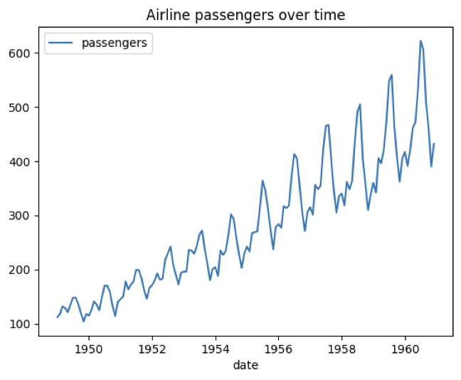
5. 시계열데이터 성분
시계열 데이터 \(\{ Y_{t};t = 1,2,...,T\}\)는 크게 네 가지 성분으로 이루어진다. 첫째, 장기간에 걸쳐 지속적인 상승이나 하락과 같은 변화를 보이는 경향(Trend) 성분이 있다. 둘째, 1년 이내와 같이 일정한 주기로 반복되는 변동 패턴을 나타내는 계절성(Seasonality) 성분이 존재한다. 셋째, 계절성보다 긴 주기의 변동을 의미하는 순환(Cycle) 성분이 있으며, 주로 경기 변동이나 경제 순환과 같은 장기 요인을 반영한다. 마지막으로, 특정한 주기나 규칙이 없이 불규칙하게 나타나는 불규칙(Irregular) 성분이 있다.
이 가운데 경향, 계절성, 순환은 비교적 규칙적인 패턴을 가지는 성분이며, 불규칙 성분은 예측이 불가능한 잡음 형태로 나타난다. 계절성과 주기 변동은 차분(differencing) 과정을 통해 제거할 수 있으며, 특히 순환 성분은 시계열 패턴을 대표하는 중요한 변동 요인으로 간주된다.
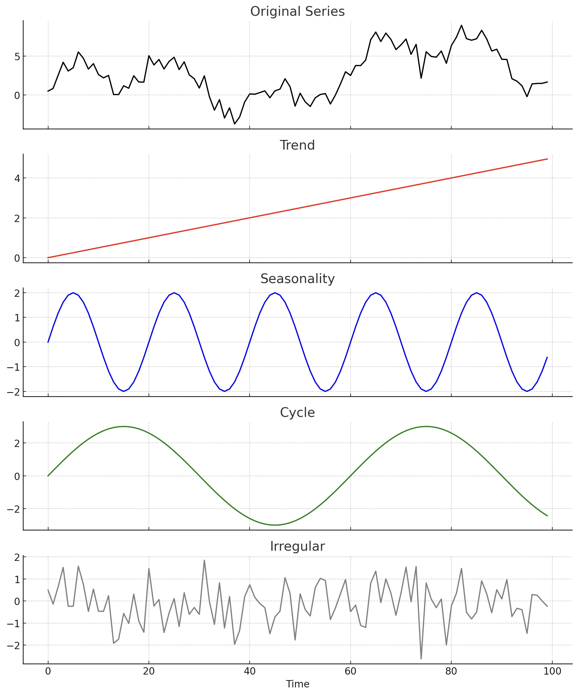
경향(Trend) \(T_{t}\)
경향은 시계열 데이터에서 장기간에 걸쳐 나타나는 지속적인 변화 패턴을 의미한다. 데이터가 시간이 지남에 따라 꾸준히 증가하거나 감소하는지, 혹은 상대적으로 일정한 수준을 유지하는지를 파악할 수 있다. 경향 패턴은 일반적으로 장기적 요인—예를 들어 인구 증가, 기술 발전, 경제 성장 또는 장기 경기침체—에 의해 발생한다.
형태에 따라 경향은 직선 경향(linear trend)과 이차 경향(quadratic trend) 등으로 구분된다. 직선 경향은 일정한 속도로 변화하는 패턴을, 이차 경향은 변화 속도 자체가 시간이 지남에 따라 증가하거나 감소하는 패턴을 나타낸다.
순환(cycle) \(C_{t}\)
순환은 시계열 데이터에서 일정한 주기와 진폭을 가지고 반복되는 변동 패턴을 의미한다. 이는 계절성보다 더 긴 기간에 걸쳐 나타나며, 경제 경기 변동이나 기후 변화와 같이 장기 요인에 의해 발생하는 경우가 많다. 순환 패턴은 사인 곡선(sine curve)과 같이 일정한 간격으로 고점과 저점이 반복되는 형태로 나타나며, 이러한 주기적 변동은 장기 예측이나 시스템 동작 분석에서 중요한 단서를 제공한다.
계절성(seasonality) \(S_{t}\)
계절성은 시계열 데이터에서 일정한 주기를 가지고 반복되는 변동 패턴을 말한다. 순환과 달리 주기의 길이가 고정되어 있다는 특징이 있으며, 주별, 월별, 분기별, 연도별 등 일정 간격마다 유사한 형태의 변동이 반복된다. 예를 들어, 여름철 음료 매출 증가, 연말 소비 지출 증가, 특정 계절의 농산물 가격 변동 등이 계절성 패턴에 해당한다. 계절성은 주기성이 뚜렷하기 때문에 차분(differencing)이나 계절 조정기법을 통해 비교적 쉽게 제거하거나 분석에 반영할 수 있다.
불규칙성(irregular) \(I_{t}\)
불규칙성은 시계열 데이터에서 경향, 순환, 계절성과 같은 규칙적인 패턴이 전혀 존재하지 않는 변동 성분을 의미한다. 이는 예측할 수 없는 우연한 요인이나 측정상의 오차 등에 의해 발생하며, 통계 모형에서 오차항에 해당한다. 불규칙 성분은 일반적으로 평균이 0이고 분산이 일정하며, 서로 독립적인 백색잡음(white noise)으로 가정된다. 이러한 성분은 데이터 분석에서 제거하거나 모형화하기 어렵기 때문에, 주로 다른 패턴 성분을 추출한 후 남은 잔차로 해석된다.
3. 시계열데이터 분석방법
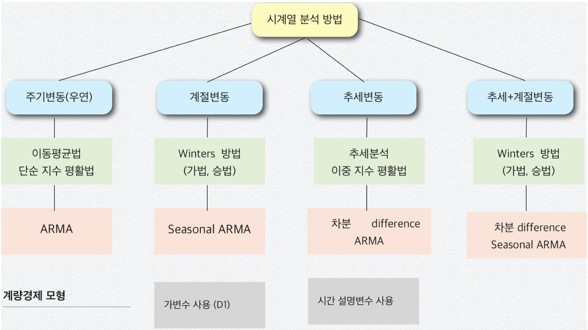
회귀분석(계량경제) 방법, BOX-JENKINS 방법, 지수 평활법, 시계열 분해 방법이 있다. 회귀분석 방법과 BOX-JENKINS 방법(ARMA)은 수학적 이론 모형에 의존하고 시간에 따라 변동이 많은(빠른) 시계열 자료에 적용된다. 지수 평활법이나 시계열 분해 방법은 다소 직관적인 방법이며 시간에 따른 변동이 느린 데이터를 분석하는데 사용된다.
과거의 데이터 패턴을 활용하여 미래 값을 예측, 설명변수가 있는 시계열 모형은 econometric 계량경제모형
frequency domain : Fourier 분석에 기초, spectrum density function
time domain : 자기상관함수 이용, 관측값들의 시간적 변화 탐색
평활법 : 과거 값의 평균으로 미래 값을 예측하는 방법
이동 평균법(moving average): 최근 데이터의 평균을 (혹은 중앙치) 예측치로 사용하는 방법이다. 각 과거치에는 동일한 가중치가 주어지면 과거 패턴 인식이 주목적이다.
지수 평활법(exponential smoothing): 현재 가까운 시점에 가장 많은 가중치 주고 멀어질수록 낮은 가중치를 주는 방법이다. 경향이나 계절성 존재여부에 따라 단순지수, 이중지수, 삼중지수, 계절지수 평활법 등이 있다.
ARMA 모형
\(Y_{t} = \mu + \alpha_{1}Y_{t - 1} + ... + \alpha_{p}Y_{t - p} + \beta_{1}e_{t - 1} + ... + \beta_{q}e_{t - q} + e_{t - 1}\)
시계열 데이터 \(\{ Y_{t};t = 1,2,...,T\}\)에 대한 모형화를 통하여 미래 값을 예측하는 방법이다. 설명변수가 종속변수 자신의 과거 값인 AR(Auto Regressive) 모형 , 설명변수가 오차항의 과거 값인 MA(Moving Average) 모형, 그리고 AR과 MA 모형의 결합인 ARMA 모형이 있다.
계량경제 Econometrics Model
\(Y_{t} = \mu + \alpha_{1}X_{1t} + \alpha_{2}X_{2t} + ... + \alpha_{p}X_{pt} + e_{t - 1}\)
시계열 데이터 \(\{ Y_{t};t = 1,2,...,T\}\) 종속변수로 하고 p개의 (X1, X2, ..., Xp)를 설명하는 회귀분석 모형, 유의한 (영향을 미치는) 설명변수를 찾을 수 있으나 예측에 어려움이 있다. 왜냐하면 설명변수의 예측치도 있어야 하기 때문이다. 그러므로 설명변수의 경우에는 \(t\)시점 대신 이전 시점\(t - 1,t - 2,...\)을 사용한다.
성분 관련 분석
추세분석 : 추세(일차식, 이차식, 로그형태 등) 성분을 파악한다.
변동 분해 : 3개 주요 성분 (주기, 계절성, 경향)을 분해하는 방법
X-11 방법 : 정부통계에서 가장 많이 쓰이는 계절 조정 방법
6. 최적 모형 선택 통계량
예측오차: \(e_{t} = Y_{t} - {\widehat{Y}}_{t}\)
Mean Absolute Error (MAE) 평균절대오차: \(MAE = \frac{1}{T}\overset{T}{\sum_{i = 1}}|e_{t}|\)
Mean Absolute Percentage Error (MAPE) 평균절대오차비율: \(MAPE = \frac{1}{T}\overset{T}{\sum_{i = 1}}|\frac{e_{t}}{Y_{t}}| \times 100(\%)\)
Mean Squared Error (MSE) 평균오차자승합: \(MSE = \frac{1}{T}\overset{T}{\sum_{i = 1}}e_{t}^{2}\)
Root-Mean Squared Error (MSE) 제곱근MSE: \(RMSE = \sqrt{\frac{1}{T}\overset{T}{\sum_{i = 1}}e_{t}^{2}}\)
chapter 1. 시계열 모형
1. 시계열 모형 개념
정의
시계열 분석에서 중요한 출발점은 관측 자료를 설명할 수 있는 적절한 확률모형 또는 모형 계열을 선택하는 것이다. 미래 관측값은 본질적으로 불확실하므로, 각 시점의 관측값 \(\{ x_{t}\}\)는 확률변수 \(\{ X_{t}\}\)의 실현값이라고 가정한다.
시계열 모형이란, 관측된 자료 \(\{ x_{t}\}\)가 실현값이라고 가정되는 확률변수열 \(\{ X_{t}\}\)의 결합분포를 구체적으로 명세한 것이다. 경우에 따라서는 모든 결합분포를 명시하는 대신 평균과 공분산만을 제시하는 경우도 있다.
이론적으로 완전한 확률 시계열 모형은 \(\{ X_{1},X_{2},\ldots\}\)의 모든 결합분포를 명시한다. 예를 들어,
\[P(X_{1} \leq x_{1},\ldots,X_{n} \leq x_{n}), - \infty < x_{1},\ldots,x_{n} < \infty,n = 1,2,\ldots\]
와 같이 모든 시점 n에 대한 확률을 규정해야 한다. 그러나 실제 분석에서 이렇게 완전한 명세는 매우 드물다. 대부분의 시계열은 너무 많은 모수를 포함하기 때문에, 분석 가능성과 효율성을 위해 1차 및 2차 모멘트(평균과 공분산)와 같이 보다 제한적인 정보만을 사용하는 경우가 많다.
이러한 평균과 공분산 같은 2차 특성만으로 시계열을 묘사하는 방식을 2차 특성 접근이라 한다. 특히 결합분포가 다변량 정규분포인 경우, 이러한 2차 특성만으로도 결합분포 전체를 완전히 결정할 수 있다. 비록 2차 특성 접근법은 정보의 일부를 포기하는 결과를 낳지만, 최소평균제곱오차 예측이론과 결합하면 실용적이고 효율적인 시계열 분석이 가능하다.
실제 분석에서는 하나의 시계열 자료만 관측 가능한 경우가 많다. 예를 들어, 1900~1996년 동안 국내 연간 강수량 자료는 오직 한 가지 실현값일 뿐이며, 이는 가능한 많은 경우 중 하나일 뿐이다. 이러한 상황에서 우리는 가용한 자료를 설명하고 예측할 수 있는 간단한 시계열 모형을 설정하고, 더 나아가 다양한 응용 목적에 맞는 모형군을 확장해 나가게 된다.
시계열 모형화의 일반적 접근 방법
시계열 분석을 시작할 때는 먼저 데이터를 시각화하여 주요 특징을 파악한다. 이를 통해 추세나 계절성이 있는지, 뚜렷한 구조 변화가 있는지, 혹은 이상치가 존재하는지를 확인한다.
다음 단계는 추세와 계절 성분을 제거하여 정상성(stationarity)을 가진 잔차를 만드는 것이다. 데이터의 변동 폭이 시계열 수준과 비례하는 경우, 로그 변환(log transformation)과 같이 분산 안정화를 위한 사전 변환을 적용할 수 있다. 예를 들어, 모든 값이 양수이도록 상수를 더한 뒤 로그를 취하면 변동성이 일정한 데이터로 변환할 수 있다. 추세와 계절성 제거 방법으로는 모형을 적합하여 해당 성분을 추정 후 제거하거나, 차분(differencing)을 이용해 \(Y_{t} = X_{t} - X_{t - d}\)와 같이 원 시계열을 일정 시차 d만큼 차감하는 방식이 있다. 목표는 정상성을 만족하는 잔차를 만드는 것이다.
정상화된 잔차에 대해서는 표본 자기상관함수 등 여러 통계량을 활용하여 적절한 모형을 선택하고 적합한다. 이후에는 잔차를 예측하고, 앞서 적용했던 변환을 역변환하여 원래 시계열의 예측값을 얻는다.
또 다른 접근 방법으로는 시계열을 주파수 영역에서 해석하는 푸리에 변환을 이용하여, 서로 다른 주파수를 가진 사인파와 코사인파 성분으로 표현하는 방식이 있다. 이 방법은 신호 처리나 구조물 공학과 같은 공학적 응용에서 특히 중요하며, 구조물의 공진 주파수가 외부 하중의 주파수와 일치하지 않도록 설계하는 데 활용될 수 있다.
2. 시계열 기본 모형
(1) 평균 0인 모형
시계열 모형 중 가장 단순한 형태는 추세나 계절 성분이 전혀 없고, 관측값들이 서로 독립이며 동일한 분포를 따르는 경우이다. 특히 평균이 0인 확률변수열 \(\{ X_{1},X_{2},\ldots\}\)로 구성된 경우로 iid 잡음 모형이라고도 한다. 각 확률변수는 동일한 누적분포함수 \(F( \cdot )\)를 가지며, 결합분포는 다음과 같이 곱으로 분리된다.
\[P(X_{1} \leq x_{1},\ldots,X_{n} \leq x_{n}) = P(X_{1} \leq x_{1})\cdots P(X_{n} \leq x_{n}) = F(x_{1})\cdots F(x_{n})\]
이는 시계열의 모든 시점이 서로 독립임을 의미한다. 따라서 어떤 시점의 값이 주어져도 다른 시점의 값을 예측하는 데 전혀 도움이 되지 않는다. 수식으로 표현하면 다음과 같다.
\[P(X_{n + h} \leq x \mid X_{1} = x_{1},\ldots,X_{n} = x_{n}) = P(X_{n + h} \leq x)\]
예측의 관점에서, 관측값 \((X_{1},\ldots,X_{n})\)을 바탕으로 미래값 \(X_{n + h}\)를 최소평균제곱오차(MSE) 기준으로 예측하는 함수 f를 찾을 경우, 이 모형에서는 항상 0이 최적 예측값이 된다. 즉, iid 잡음 모형은 예측에는 아무런 실질적 정보를 제공하지 않는다.
그럼에도 불구하고 iid 잡음 모형은 시계열 분석에서 중요한 의미를 가진다. 이는 보다 복잡한 시계열 모형을 구축할 때 기초 구성요소로 사용될 수 있으며, 실제 시계열이 iid 잡음으로부터 얼마나 벗어나는지를 측정하는 기준이 되기 때문이다.
Binary Process
iid 잡음 모형의 한 예로, 각 시점 \(t = 1,2,\ldots\)에서 확률 \(p\)로 \(X_{t} = 1\), 확률 \((1 - p)\)로 \(X_{t} = 0\)이 나오는 확률변수열 \(\{ X_{t}\}\)를 생각할 수 있다. 동전을 던져 앞면이 나오면 +1, 뒷면이 나오면 0을 부여하는 실험이 여기에 해당한다.
Random Walk
랜덤 워크는 iid 잡음을 누적합하여 생성되는 시계열이다. 초기값을 \(S_{0} = 0\)으로 두고, \(S_{t} = X_{1} + X_{2} + \cdots + X_{t},t = 1,2,\ldots\)로 정의하면, \(\{ X_{t}\}\)가 평균 0인 iid 잡음일 때 \(\{ S_{t}\}\)는 평균이 0인 랜덤 워크가 된다.
(2) 추세와 계절성을 포함한 모형
많은 시계열 자료에는 뚜렷한 추세가 존재한다. 예를 들어, 호주 월별 탑승객수 자료에는 장기적인 증가 경향이 분명히 나타난다. 이러한 경우, 평균이 0인 모형은 적합하지 않으며, 추세를 포함한 모형이 필요하다.
\(X_{t} = m_{t} + Y_{t}\), 여기서 \(m_{t}\)는 시간이 지남에 따라 서서히 변하는 함수로 추세 성분이라 하며, \(Y_{t}\)는 평균이 0인 확률 과정이다. 추세 성분를 추정하는 대표적인 방법 중 하나가 최소제곱법이다. 최소제곱법에서는 \(m_{t}\)를 매개변수화된 함수로 가정하고, 관측자료 \(\{ x_{1},\ldots,x_{n}\}\)에 대해 \(\overset{n}{\sum_{t = 1}}(x_{t} - m_{t})^{2}\)을 최소화하도록 모수 값을 추정한다. 예를 들어, 2차 다항식 추세를 가정하면 \(m_{t} = a_{0} + a_{1}t + a_{2}t^{2}\)와 같이 표현할 수 있으며, \(a_{0},a_{1},a_{2}\)는 최소제곱법을 통해 추정된다.
이러한 추세 모형은 장기 변화 패턴을 파악하는 데 유용하며, 필요할 경우 계절성이나 순환 성분을 추가로 포함시켜 더 복잡한 시계열 모형을 구성할 수 있다.
Harmonic Regression(조화회귀)
많은 시계열 데이터는 날씨와 같이 계절적으로 변하는 요인의 영향을 받는다. 이러한 효과는 주기가 고정되어 알려진 주기적 성분으로 모형화할 수 있다. 예를 들어, ’교통사고 사망자 수’ 자료는 매년 7월에 최고점, 2월에 최저점을 보이며, 주기 12의 계절 요인을 강하게 시사한다.
계절 요인은 추세가 없고 잡음은 허용하는 단순한 모형으로 다음과 같이 표현할 수 있다. \(X_{t} = s_{t} + Y_{t}\), 여기서 \(s_{t}\)는 주기 \(d\)를 가지는 주기 함수이며(\(s_{t - d} = s_{t}\)), 편리한 선택으로 사인과 코사인 파형의 합인 조화(harmonics)를 사용할 수 있다. 즉,
\(s_{t} = a_{0} + \overset{k}{\sum_{j = 1}}\left\lbrack a_{j}\cos(\lambda_{j}t) + b_{j}\sin(\lambda_{j}t) \right\rbrack\)로 표현되며, \(a_{0},a_{1},\ldots,a_{k},b_{1},\ldots,b_{k}\)는 미지의 모수이고, \(\lambda_{1},\ldots,\lambda_{k}\)는 고정된 주파수로 \(2\pi/d\)의 정수배에 해당한다.
이 모형은 푸리에 급수와 동일한 구조를 가지며, \(k\)는 사용되는 조화의 개수를 의미한다. 예를 들어, 주기 \(d = 365\)의 일별 데이터에서 기본 파형 하나만 적합하려면 \(k = 1,f_{1} = 1\)을 선택한다. 반면, 주기 365를 1, 2, 3, 4로 나눈 파형의 조합을 사용하려면 \(k = 4\)로 설정하고 각 \(f_{j} = j\)로 지정한다. 조화회귀는 계절성이 뚜렷하고 주기가 일정한 시계열에서 매우 효과적이며, 특히 추세 없이 주기 성분과 잡음만 있는 경우 계절 변동을 설명하는 데 유용하다.
정상성 모형 stationary model
시계열 \(\{ X_{t},t = 0, \pm 1,\ldots\}\)가 정상적(stationary)이라고 말하려면, 시계열의 통계적 특성이 시간에 따라 변하지 않아야 한다. 보다 구체적으로, 평균과 분산이 일정하고, 공분산이 두 시점의 절대적 시간 위치가 아니라 시차(lag)에만 의존해야 한다.
【정의】 \(E(X_{t}^{2}) < \infty\)인 시계열 \(\{ X_{t}\}\)에 대해, 평균 함수는 \(\mu_{X}(t) = E(X_{t})\), 공분산 함수는 \(\gamma_{X}(r,s) = Cov(X_{r},X_{s}) = E\lbrack(X_{r} - \mu_{X}(r))(X_{s} - \mu_{X}(s))\rbrack\)
로 정의된다.
【정의】 \(E(X_{t}^{2}) < \infty\)인 시계열 \(\{ X_{t}\}\)가 약한 정상성을 가지려면
1. 평균 \(\mu_{X}(t)\)가 시간 t에 무관해야 하며,
2. 공분산 \(\gamma_{X}(t + h,t)\)가 t에 무관하고 시차 h에만 의존해야 한다.
엄밀한 정상성(strict stationarity)은 모든 h와 \(n > 0\)에 대해, \((X_{1},\ldots,X_{n}),(X_{1 + h},\ldots,X_{n + h})\)가 동일한 결합분포를 가지는 경우를 말한다.
약한 정상성 조건 (2)에 따라, 정상 시계열의 공분산 함수는 시차 h에 대한 함수로 정의된다. \(\gamma_{X}(h): = \gamma_{X}(h,0) = \gamma_{X}(t + h,t)\)
【자기상관함수 정의】 정상 시계열 \(\{ X_{t}\}\)의 \(lagh\)에서의 자기공분산함수(Autocovariance Function, ACF)는 \(\gamma_{X}(h) = Cov(X_{t + h},X_{t})\)로 정의된다. 이때 \(lagh\)에서의 자기상관함수는 \(\rho_{X}(h) = \frac{\gamma_{X}(h)}{\gamma_{X}(0)} = Cor(X_{t + h},X_{t})\)로 정의되며, 이는 시계열이 시간 간격 \(h\)만큼 떨어진 두 시점에서 얼마나 선형적으로 관련되어 있는지를 나타낸다.
【예제 iid 잡음】 \(\{ X_{t}\}\)가 평균 0, 분산 \(\sigma^{2}\)를 가지는 독립 동일분포(iid) 확률변수열이라고 하자. (1) \(E(X_{t}) = 0\) (2) \(\gamma_{X}(t + h,t) = \{\begin{matrix} \sigma^{2}, & \text{if}h = 0 \\ 0, & \text{if}h \neq 0 \end{matrix}\) 모두 t에 의존하지 않으므로 정상성 모델이다. 같은 이유로 백색잡음도 정상성 모델이다.
【예제 랜덤 워크】 \(\{ S_{t}\}\)가 iid 잡음 \(\{ X_{t}\}\)를 누적합하여 만든 랜덤워크라 하면 공분산 \(\gamma_{S}(t + h,t) = Cov(S_{t + h},S_{t}) = t\sigma^{2}\)는 시차 t에 의존하므로 비정상성 모델이다.
chapter 3. 평활법
1. 이동평균법
계열 데이터는 주기성이나 불규칙성을 포함하는 경우가 많으므로, 이러한 단기 변동을 완화하고 전반적인 추세를 파악하기 위해 과거 관측값을 평균하는 방법이 사용된다. 이와 같이 과거의 일정 개수 관측값을 평균하여 예측값을 구하는 방법을 이동평균법(Moving Average)이라 한다.
이동평균법은 예측 시점 이전의 일정 기간(예: 최근 3개월, 5일 등)에 해당하는 과거 자료의 평균을 사용하여 다음 시점의 값을 추정한다. 모든 과거치에 동일한 가중치를 부여한다는 점에서, 과거치에 서로 다른 가중치를 부여하는 지수평활법(Exponential Smoothing)과 구별된다.
이 방법은 단기 변동을 제거하고 장기 경향을 파악하는 데 효과적이며, 특히 계절 변동이나 잡음을 제거한 추세 분석과 단기 예측에 자주 활용된다.
이동평균(Moving Average, MA) 계산과 예측
이동평균법은 과거 m개의 관측값의 평균을 이용하여 다음 시점의 값을 예측하는 방법이다. 시점 t에서의 단순 이동평균(Simple Moving Average)은 다음과 같이 계산된다.
\[{\widehat{X}}_{t + 1} = \frac{X_{t} + X_{t - 1} + \cdots + X_{t - m + 1}}{m}\]
이동평균에는 일반 이동평균과 중심 이동평균(Centered Moving Average, CMA)가 있다.
일반 이동평균은 예측 시점 직전의 m개 자료를 단순 평균하여 사용한다.
중심 이동평균은 m개의 자료 가운데 중앙 시점을 대표값으로 사용하며, 특히 계절성을 제거하는 과정에서 유용하다.
예를 들어, m = 3인 경우,
일반 이동평균: \(MA_{t} = \frac{X_{t} + X_{t - 1} + X_{t - 2}}{3}\)
중심 이동평균: 중앙시점이 t이면 \(CMA_{t} = \frac{X_{t - 1} + X_{t} + X_{t + 1}}{3}\)이 된다.
중심 이동평균은 시계열을 부드럽게 하면서도 시점의 중심에 해당하는 값을 대표값으로 하므로, 특히 계절 조정 과정에서 계절성을 제거하는 데 자주 사용된다.
이동평균 주기 m의 결정
이동평균법에서 주기 m은 데이터의 특성과 분석 목적에 따라 설정한다. 일반적으로 m은 데이터 주기의 배수를 활용하여 결정하며, 이는 변동의 주요 주기를 부드럽게 제거하고 장기 경향을 파악하기 위함이다. 예를 들어,
주가 데이터(일별): m = 5 (1주), m = 20 (1개월), m = 60 (분기), m = 120 (반년)
월별 데이터: m = 12 (1년), m = 24 (2년), m = 36 (3년)
이동평균법의 특징
이동평균법은 시계열 데이터에서 계절성과 불규칙 변동을 제거함으로써 전반적인 추세를 직관적으로 파악할 수 있는 장점을 가진다. 주기 m의 길이에 따라 분석 초점이 달라지는데, m이 길면 장기 패턴을, m이 짧으면 단기 패턴을 진단하는 데 유용하다. 특히 주기가 길어질수록 시계열에서 주기적 변동이 사라지고 직선에 가까운 장기 추세선이 나타난다.
이 방법은 각 시점에서 자신을 포함한 m개의 관측치를 동일한 가중치로 평균하여, 시계열 자료 \(\{ Y_{t}\}\)의 전반적인 패턴을 인식한다. 이러한 단순한 계산 방식 덕분에 이해와 구현이 용이하며, 시각적으로도 직관적인 정보를 제공한다.
이동평균법의 한계와 문제점
이동평균법은 계산이 단순하고 직관적인 장점이 있지만, 몇 가지 한계가 존재한다. 첫째, 과거 관측치에 동일한 가중치를 부여한다는 점이다. 이는 시간적으로 가까운 자료와 먼 과거 자료를 동일하게 취급하므로, 최근 정보의 중요성이 반영되지 못하고 경우에 따라 추세 판단이 왜곡될 가능성이 있다.
둘째, 이동평균법은 구조적으로 차기 1기만 예측이 가능하다. 따라서 장기 예측보다는 과거 자료를 부드럽게 하여 전반적인 추세를 파악하거나 단기 패턴을 분석하는 데 적합하다. 이러한 이유로, 이동평균법은 독립적인 예측 도구라기보다 시계열 모형화 이전의 탐색적 분석이나 데이터 전처리 단계에서 주로 활용된다.
#예제 데이터 가져오기
import pandas as pd
import seaborn as sns
from datetime import datetime
df=sns.load_dataset("flights")
df['date']=df.apply(lambda x: datetime.strptime(f"{x['year']}-{x['month']}", '%Y-%b').date(), axis=1)
#이동평균 주기=12, 일년
df['rolling_avg'] = df['passengers'].rolling(window=12).mean()
import matplotlib.pyplot as plt
plt.plot(df['date'],df['passengers'], 'b')
plt.plot(df['date'],df['rolling_avg'], 'r')
plt.show()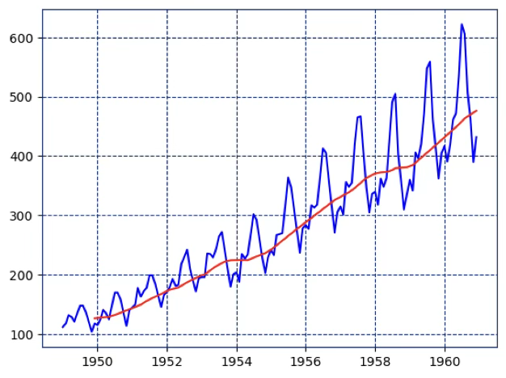
2. 지수 평활법 exponential smoothing
이동평균법은 모든 관측치에 동일한 가중치를 부여하므로, 최근 자료와 오래된 자료가 동일하게 반영된다는 한계가 있다. 이로 인해 최신 정보의 중요성이 충분히 반영되지 못하고, 과거의 추세 패턴이 과도하게 포함되는 경향이 있다.
이러한 단점을 보완한 방법이 지수평활법이다. 지수평활법은 최근 관측치에 더 높은 가중치를 부여하고, 시점이 멀어질수록 가중치를 지수적으로 감소시키는 방식으로 과거 자료를 반영한다. 가중치는 일반적으로 평활 상수(smoothing constant) \(\alpha(0 < \alpha \leq 1)\)로 조절하며, \(\alpha\)값이 클수록 최근 자료의 비중이 커지고, 작을수록 장기 패턴을 더 많이 반영하게 된다.
이 방법은 단순한 계산 구조에도 불구하고 예측 능력이 뛰어나며, 단기 미래 예측에 널리 활용된다. 특히 시계열 데이터에서 경향이 크지 않은 경우, 지수평활법은 과거 패턴을 부드럽게 반영하면서도 변화에 신속하게 대응할 수 있다.
1. 단순 지수평활법(Simple Exponential Smoothing): 추세나 계절성이 없는 시계열에 사용되는 가장 기본적인 형태이다. 미래 예측값은 이전 예측값과 새로운 관측값의 가중 평균으로 계산되며, 평활 상수 \(\alpha\)로 최근 자료의 반영 비율을 조절한다.
2. 이중 지수평활법(Double Exponential Smoothing, Holt’s Method): 시계열에 추세가 존재하는 경우 사용한다. 레벨(level)과 추세(trend)를 각각 추정하여, 단순 지수평활법에 추세 항을 추가한 형태이다. 이를 통해 변화하는 추세를 반영한 예측이 가능하다.
3. 삼중 지수평활법(Triple Exponential Smoothing, Holt–Winters Method): 시계열에 추세와 계절성이 모두 존재하는 경우 사용한다. 레벨, 추세, 계절성(seasonal component)을 동시에 추정하며, 계절성이 고정폭(additive)인지 비례형(multiplicative)인지에 따라 두 가지 형태가 있다.
4. 적응형 지수평활법(Adaptive Exponential Smoothing): 데이터의 변화 속도에 따라 평활 상수 \(\alpha\)를 자동으로 조정하는 방법이다. 급격한 변동 시에는 \(\alpha\)를 크게, 안정적인 시기에는 작게 설정하여 예측 정확도를 높인다.
(1) 단순지수평활법 Simple ES
단순 지수평활법은 주기(순환)만 존재하고 추세나 계절성이 없는 시계열 자료에 적합한 예측 방법이다. 이 방법은 과거의 모든 관측값을 활용하되, 최근 관측치에 더 큰 가중치를 부여하고 시점이 멀어질수록 가중치를 지수적으로 감소시키는 특징을 가진다. 이를 통해 최근 데이터의 변화가 예측에 빠르게 반영되면서도 과거 자료가 완전히 무시되지 않는다.
모형 구조
단순 지수평활법의 평활값(예측값)은 다음과 같이 정의된다.
\(\widehat{Y}t = \alpha Y_{t} + (1 - \alpha)\widehat{Y}t - 1\). 여기서 \(Y_{t}\)는 시점 t에서의 실제 관측값, \({\widehat{Y}}_{t}\)는 시점 t에서의 평활값, 그리고 \(\alpha\)는 평활 상수(smoothing constant)이다(\(0 < \alpha \leq 1\)).
이 식은 최근 관측값 \(Y_{t}\)와 직전 평활값 \({\widehat{Y}}_{t - 1}\)의 가중 평균이며, 과거 관측값에 대한 가중치는 \((1 - \alpha)^{k}\)로 지수적으로 감소한다.
가중치 해석
가중치 \(\alpha\)가 클수록 최근 자료의 비중이 커지고, 과거 자료의 영향은 급격히 줄어든다. 반대로 \(\alpha\)가 작으면 과거 자료의 영향이 오래 지속되며, 변화에 대한 반응 속도는 느려진다. Brown은 경험적으로 \(\alpha\)를 0.05~0.3 범위에서 선택할 것을 권장하였다.
다음 그림은 레벨이 t=40에서 점프하도록 만든 예시 데이터로 α=0.7은 변화에 빠르게 반응하고 α=0.2는 느리게 따라간다.
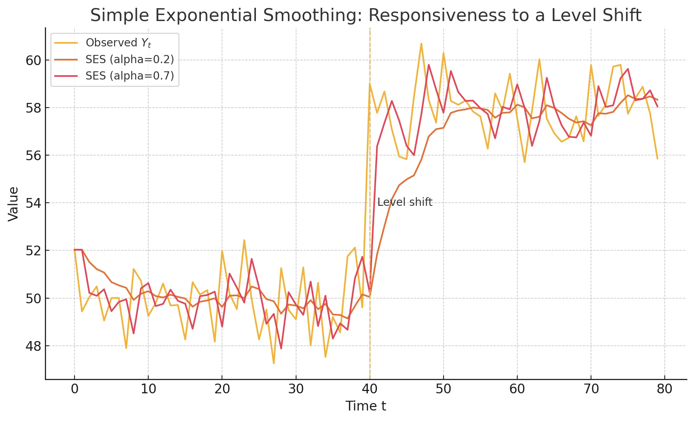
주기와 평활 상수의 관계
Montgomery & Johnson(1976)은 데이터 주기 \(P\)와 평활 상수 \(\alpha\)의 관계를 다음과 같이 제안하였다. \(\alpha \approx 1 - {0.8}^{(1/P)}\). 예를 들어, 주기가 12개월인 월별 데이터의 경우 \(\alpha \approx 0.18\) 정도가 적절하다.
초기값 설정
초기 평활값 \({\widehat{Y}}_{1}\)은 예측의 안정성을 위해 중요하다. 일반적으로 첫 번째 관측값 \({\widehat{Y}}_{1}\) 또는 초기 몇 개 자료의 평균을 사용하며, 경우에 따라 최소제곱법을 통해 추정하기도 한다.
예측 범위
단순 지수평활법은 구조적으로 1기 예측(one-step-ahead)에 최적화되어 있다. 장기 예측의 경우, 2기 이후의 예측치는 모두 동일하게 \({\widehat{Y}}_{t + 1}\)로 수렴한다. 따라서 장기 예측에는 적합하지 않고, 단기 예측이나 단기 추세 분석에 주로 활용된다.
# 예제 데이터 가져오기
import pandas as pd
import seaborn as sns
import matplotlib.pyplot as plt
from datetime import datetime
from statsmodels.tsa.api import SimpleExpSmoothing
# flights 데이터 로드
df = sns.load_dataset("flights")
df['date'] = df.apply(lambda x: datetime.strptime(f"{x['year']}-{x['month']}", '%Y-%b'), axis=1)
df.set_index('date', inplace=True)
# 단순 지수평활 모델 생성 및 적합
model = SimpleExpSmoothing(df['passengers'], initialization_method="heuristic")
fit_model = model.fit(optimized=True) # alpha 자동 추정
# 결과 출력
print("Optimal alpha:", fit_model.params['smoothing_level'])
print("SSE:", fit_model.sse)
# 12개월 예측
forecast_steps = 12
forecast = fit_model.forecast(steps=forecast_steps)
# 시각화
plt.figure(figsize=(10,5))
plt.plot(df.index, df['passengers'], label='Observed', color='black')
plt.plot(fit_model.fittedvalues.index, fit_model.fittedvalues, label='Fitted (SES)', color='blue')
plt.plot(pd.date_range(df.index[-1] + pd.DateOffset(months=1), periods=forecast_steps, freq='M'),
forecast, label='Forecast', color='red', linestyle='--')
plt.title("Simple Exponential Smoothing - Observed vs Fitted & Forecast")
plt.xlabel("Date")
plt.ylabel("Passengers")
plt.legend()
plt.grid(True)
plt.tight_layout()
plt.show()Optimal alpha: 0.9999999850988388
SSE: 162545.8192551743
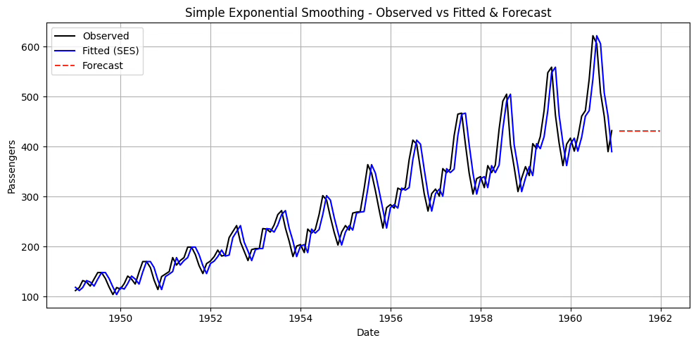
\(\alpha\)가 1에 가까운 이유
데이터에 강한 추세나 계절성이 있는 경우
SES는 추세나 계절성을 모형화하지 못한다.
그러다 보니 추세나 계절성 변화에 맞추려고 \(\alpha\)를 크게 잡아서 최근 데이터만 따라가는 방식으로 SSE를 최소화하려고 한다.
데이터 변동이 커서 과거 평균이 예측력을 떨어뜨리는 경우
예측 오차를 줄이려면 과거치보다 최근값을 더 신뢰하는 게 유리하다고 판단한다.
최적화 알고리즘이 \(\alpha\)를 1 근처로 끌어올린다.
(2) Holt’s Method 이중지수평활법
추세가 있는 시계열 데이터를 다룰 때, 단순 지수평활법을 확장한 방법이다. 수준(Level)과 기울기(Trend)를 동시에 추정하여 예측한다.
관측값 \(Y_{1},Y_{2},\ldots,Y_{n}\)이 주어졌을 때, 수준 \({\widehat{a}}_{n}\), 추세 \(\widehat{b}n\)을 추정하고, 미래 \(h\)시점 예측치는 다음과 같이 구한다.
\[\widehat{Yn + h} = {\widehat{a}}_{n} + h{\widehat{b}}_{n},h = 1,2,\ldots\]
재귀식
수준 갱신: \(\widehat{a}n + 1 = \alpha Yn + 1 + (1 - \alpha)({\widehat{a}}_{n} + {\widehat{b}}_{n})\)
추세 갱신: \(\widehat{b}n + 1 = \beta(\widehat{a}n + 1 - {\widehat{a}}_{n}) + (1 - \beta){\widehat{b}}_{n}\), 여기서 \(\alpha,\beta \in (0,1)\)는 평활 상수입니다.
예측값: \({\widehat{Y}}_{n + 1} = {\widehat{a}}_{n} + {\widehat{b}}_{n}\)
초기값 설정
가장 단순 설정법 (Holt, 1957): \({\widehat{a}}_{2} = Y_{2}\), \({\widehat{b}}_{2} = Y_{2} - Y_{1}\)
평균 기반 초기치: \(\widehat{a}1 = \frac{1}{m}\sum{t = 1}^{m}Y_{t}\), \({\widehat{b}}_{1} = \frac{Y_{m} - Y_{1}}{m - 1}\)
지수평활 기반 사전 추정: R forecast 패키지, Python statsmodels의 ExponentialSmoothing
특징
\(\alpha\)는 수준의 변화에 대한 반응 속도, \beta는 추세 변화에 대한 반응 속도를 조절.
\(\alpha\)와 \(\beta\) 모두 0~1 사이에서 설정하며, 보통 MSE 최소화를 기준으로 추정
추세가 있는 시계열에서 단기 예측에 강점.
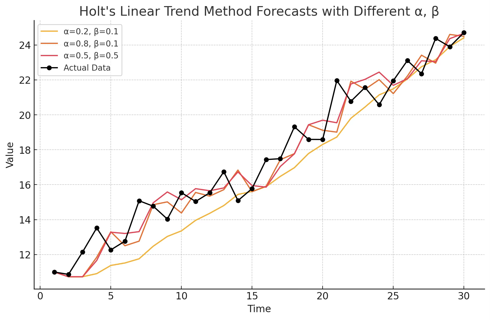
\(\alpha = 0.2,\beta = 0.1\) → 추세 반영이 느리고, 예측선이 부드러우며 변동에 둔감하다.
\(\alpha = 0.8,\beta = 0.1\) → 최근 데이터에 민감하게 반응하여 빠르게 변화를 따라가지만, 변동이 클 수 있다.
\(\alpha = 0.5,\beta = 0.5\) → 수준과 추세 모두를 비교적 빠르게 반영하여 적절한 타협형 곡선을 제공한다.
import pandas as pd
import seaborn as sns
import matplotlib.pyplot as plt
from datetime import datetime
from statsmodels.tsa.api import Holt
# flights 데이터
df = sns.load_dataset("flights")
df["date"] = df.apply(lambda x: datetime.strptime(f"{x['year']}-{x['month']}", "%Y-%b"), axis=1)
df = df.set_index("date").asfreq("MS") # 월초 빈도 지정
# Holt: 수준+추세, 초기치도 추정
holt = Holt(df["passengers"], initialization_method="estimated")
fit = holt.fit(optimized=True)
# 어떤 키들이 있는지 확인
print("params keys:", list(fit.params.keys()))
alpha = fit.params["smoothing_level"]
# 버전 호환: trend 키 이름이 다를 수 있어 get 체인으로 안전하게 꺼내기
beta = fit.params.get("smoothing_trend", fit.params.get("smoothing_slope"))
print("Optimal alpha:", alpha)
print("Optimal beta :", beta)
print("SSE:", fit.sse)
# 12개월 예측
fcst = fit.forecast(12)
# 시각화
plt.figure(figsize=(10,5))
plt.plot(df.index, df["passengers"], label="Observed", color="black")
plt.plot(fit.fittedvalues.index, fit.fittedvalues, label="Fitted (Holt)", color="blue")
plt.plot(pd.date_range(df.index[-1] + pd.DateOffset(months=1), periods=12, freq="MS"),
fcst, label="Forecast (12M)", color="red", linestyle="--")
plt.title("Holt’s Linear Trend – Observed vs Fitted & 12M Forecast")
plt.xlabel("Date"); plt.ylabel("Passengers"); plt.grid(True); plt.legend(); plt.tight_layout()
plt.show()Optimal alpha: 0.9999999850988388
Optimal beta : 0.0
SSE: 161787.91754445358
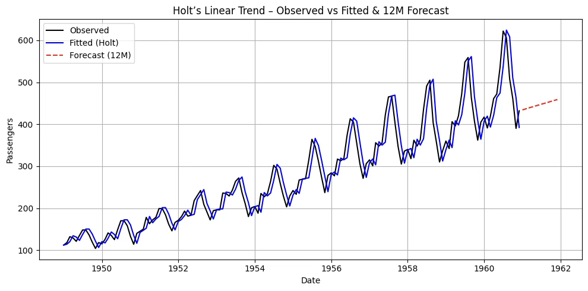
요약하면 β=0는 ”추세 업데이트를 하지 않는 게 SSE가 가장 낮았다”는 뜻입니다. 왜 그럴까요?
1. 계절성을 못 잡은 Holt: flights 데이터는 추세 + 강한 계절성. Holt(수준+추세)만 쓰면 계절 파형을 설명 못 해서, ’추세까지 억지로 추정’하는 것보다 최근값을 거의 그대로 따라가는(α≈1) 편이 SSE가 더 낫다. 그 결과 추세항은 쓸모가 없으니 β→0으로 붙는다.
2. 식 구조상 중복성: α가 1에 가까우면 \(a_{t} \approx Y_{t}\). 이때 \(a_{t} - a_{t - 1}\)가 이미 최근 변화(추세 비슷한 것)를 반영해서, 별도의 추세 평활을 해도 이득이 거의 없습니다. 최적화는 자연히 경계값 β=0으로 밀린다.
3. 초기/경계 최적화 효과: initialization_method=“estimated"로 초기추세가 작게 잡히거나 노이즈·계절파형 때문에 추세항이 오히려 오차를 키우면, 알고리즘은 β를 0으로 둬서 SES와 거의 동일한 모형으로 수렴합니다.
Damped trend 방법
Holt의 선형 방법에 의한 예측값은 \(hb_{t}\)를 지니고 있어 미래로 갈수록 지속적인 추세 (증가 또는 감소)를 모함하게 된다. 이로 인하여 특히 더 긴 예측 기간에 대해 과도하게 예측되는 경향이 있음을 나타낸다. 하여, Gardner & McKenzie( 1985 ) 는 향후 언젠가 추세를 평평한 선으로 "감쇠"시키는 매개 변수를 도입했다. 감쇠된 추세를 포함하는 방법은 매우 성공적인 것으로 입증되었다.
\({\widehat{y}}_{t + h} = a_{t} + h \cdot b_{t}\) (Holt 방법)
감쇄 적용: \({\widehat{y}}_{t + h} = a_{t} + \left( \frac{1 - \phi^{h}}{1 - \phi} \right)b_{t}\), 여기서 \(\phi\)는 0~1 사이의 감쇠계수이다.
from statsmodels.tsa.api import Holt
import seaborn as sns
from datetime import datetime
import matplotlib.pyplot as plt
# 1. 데이터 준비
df = sns.load_dataset("flights")
df['date'] = df.apply(lambda x: datetime.strptime(f"{x['year']}-{x['month']}", "%Y-%b"), axis=1)
y = df.set_index("date")["passengers"].asfreq("MS")
# 2. Holt 모형 + 감쇠 추세
holt_damped = Holt(y, damped_trend=True, initialization_method="estimated").fit(optimized=True)
# 3. SSE와 파라미터 출력
print("SSE :", holt_damped.sse)
print("alpha:", holt_damped.params['smoothing_level'])
print("beta :", holt_damped.params['smoothing_trend'])
print("phi :", holt_damped.params['damping_trend']) # 감쇠계수
# 4. 예측
steps = 12
fcst = holt_damped.forecast(steps)
# 5. 시각화
plt.figure(figsize=(10,5))
plt.plot(y, label="Observed", color="black")
plt.plot(holt_damped.fittedvalues, label="Fitted (Holt+Damped)", color="blue")
plt.plot(fcst, label="Forecast (12M)", color="red", linestyle="--")
plt.legend()
plt.grid(True)
plt.show()SSE : 161801.78439102264
alpha: 0.9999999850988388
beta : 0.0
phi : 0.995
왜 감쇄모형을 적용했는데 SSE는 증가했나?
1. 지금 모형은 사실상 SES에 가깝습니다
추정 결과: α ≈ 1, β = 0, φ = 0.995.
β=0이면 추세 업데이트를 안 합니다. φ(감쇠계수)가 있어도 추세 항이 움직이지 않으니 감쇠 효과가 거의 작동하지 않음 → Holt+damped가 SES와 거의 동일한 행동을 하다.
이런 상황에선 파라미터 하나(φ)만 늘어난 셈이라, 훈련 SSE가 좋아질 이유가 없습니다(오히려 최적화의 미세한 차이로 약간 커질 수 있음).
2. flights 데이터의 본질: 강한 추세 + 계절성
Holt(추세만) 또는 Holt+damped(추세+감쇠)로는 계절 패턴을 잡지 못한다.
그 결과 SSE를 줄이려면 최근값을 강하게 따라가는 게 최선 → \(\alpha\)는 1에, \(\beta\)는는 0으로 가게 된다.
그러므로 Holt와 Holt+damped의 SSE 차이는 미미하거나, 가끔 damped 쪽이 더 나빠 보이게 된다.
(3) Holt–Winters Method 삼중지수평활법
이전 설명한 지수평활법은 계절성분이 없는 경우 사용된다. 그러므로 계절성이 있는 시계열 데이터에는 적합하지 않다. 강우량, 월별 수출량, 여행 승객 수 등은 계절성을 가지고 있다.
Holt–Winters’ Additive Method
계절효과의 크기가 시계열 전체 수준(Level)**에 관계없이 거의 일정할 때 사용한다. 즉, 계절성이 절대적인 차이로 반복된다.
\(\begin{matrix} \widehat{y}t + h & = a_{t} + b_{t}h + st + h - m \\ a_{t} & = \alpha(y_{t} - s_{t - m}) + (1 - \alpha)(a_{t - 1} + b_{t - 1}) \\ b_{t} & = \beta(a_{t} - a_{t - 1}) + (1 - \beta)b_{t - 1} \\ s_{t} & = \gamma(y_{t} - a_{t}) + (1 - \gamma)s_{t - m} \end{matrix}\), 여기서 \(a_{t}\)는 수준, \(b_{t}\)는 추세, \(s_{t}\)는 계절성, 그리고 \(m\)은 주기이다.
Holt–Winters’ Multiplicative Method
계절효과의 크기가 수준에 비례하여 변할 때 사용하게 되는데 계절성이 비율적 차이로 반복된다. 예를 들면, 매년 12월에는 항상 약 20% 증가, 여름에는 15% 감소하는 시계열 데이터에 적용된다.\(\begin{matrix} \widehat{y}t + h & = (a_{t} + b_{t}h) \cdot st + h - m \\ a_{t} & = \alpha\frac{y_{t}}{s_{t - m}} + (1 - \alpha)(a_{t - 1} + b_{t - 1}) \\ b_{t} & = \beta(a_{t} - a_{t - 1}) + (1 - \beta)b_{t - 1} \\ s_{t} & = \gamma\frac{y_{t}}{a_{t}} + (1 - \gamma)s_{t - m} \end{matrix}\), 여기서 \(\gamma\)는 계절성분 갱신 시 적용되는 평활 상수로 절 패턴의 변화 속도를 얼마나 빠르게 반영할지를 결정한다.
import pandas as pd
import seaborn as sns
import matplotlib.pyplot as plt
from datetime import datetime
from statsmodels.tsa.holtwinters import ExponentialSmoothing
# 1) 데이터 로드 & 시계열 인덱스 설정
df = sns.load_dataset("flights")
df["date"] = df.apply(lambda x: datetime.strptime(f"{x['year']}-{x['month']}", "%Y-%b"), axis=1)
y = df.set_index("date")["passengers"].asfreq("MS") # 월초 빈도
# 2) Holt–Winters Additive (trend='add', seasonal='add')
hw_add = ExponentialSmoothing(
y, trend="add", seasonal="add", seasonal_periods=12,
initialization_method="estimated"
).fit(optimized=True)
# 3) Holt–Winters Multiplicative (trend='add', seasonal='mul')
hw_mul = ExponentialSmoothing(
y, trend="add", seasonal="mul", seasonal_periods=12,
initialization_method="estimated"
).fit(optimized=True)
# 4) 12개월 예측
steps = 12
fcst_add = hw_add.forecast(steps)
fcst_mul = hw_mul.forecast(steps)
# 5) 파라미터 & SSE 출력
print("[Additive]")
print(" alpha:", hw_add.params.get("smoothing_level"))
print(" beta :", hw_add.params.get("smoothing_trend"))
print(" gamma:", hw_add.params.get("smoothing_seasonal"))
print(" SSE :", hw_add.sse, "\n")
print("[Multiplicative]")
print(" alpha:", hw_mul.params.get("smoothing_level"))
print(" beta :", hw_mul.params.get("smoothing_trend"))
print(" gamma:", hw_mul.params.get("smoothing_seasonal"))
print(" SSE :", hw_mul.sse)
# 6) 시각화
plt.figure(figsize=(11,5))
plt.plot(y.index, y, label="Observed", color="black")
plt.plot(hw_add.fittedvalues.index, hw_add.fittedvalues, label="Fitted (Additive)")
plt.plot(hw_mul.fittedvalues.index, hw_mul.fittedvalues, label="Fitted (Multiplicative)")
plt.plot(pd.date_range(y.index[-1] + pd.DateOffset(months=1), periods=steps, freq="MS"),
fcst_add, label="Forecast Add", linestyle="--")
plt.plot(pd.date_range(y.index[-1] + pd.DateOffset(months=1), periods=steps, freq="MS"),
fcst_mul, label="Forecast Mul", linestyle="--")
plt.title("Holt–Winters: Additive vs Multiplicative")
plt.xlabel("Date"); plt.ylabel("Passengers"); plt.grid(True); plt.legend(); plt.tight_layout()
plt.show()[Additive]
alpha: 0.2525303255513238
beta : 0.0
gamma: 0.7474696744486762
SSE : 21564.432209838982
[Multiplicative]
alpha: 0.31858664757791894
beta : 0.0
gamma: 0.6013533719848393
SSE : 15952.880434994611
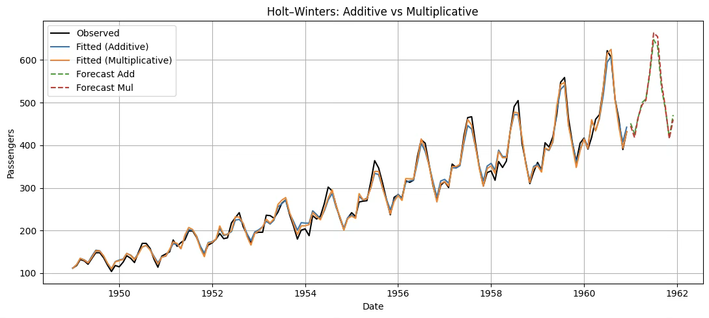
chapter 4. ARMA 모형
ARIMA(Auto-Regressive Integrated Moving Average) 모형은 George Box와 Gwilym Jenkins가 제안한 시계열 모형으로, 자기회귀(AR), 차분(Integrated), 이동평균(MA) 요소를 결합하여 시계열 데이터를 설명하고 예측한다.
시계열 자료 \(\{ Y_{t}\}\)의 과거 값 \(\{ Y_{t - 1},Y_{t - 2},\ldots\}\)이 설명변수가 되는 경우를 자기회귀 모형(AR)이라 한다. 이전 관측치들의 가중치가 동일하면 이동평균법, 가중치가 최근 관측치에서 크고 과거로 갈수록 지수적으로 감소하면 지수평활법이라 한다.
과거 관측치로 설명되지 않는 부분, 즉 잔차(오차항) \(\{\varepsilon_{t - 1},\varepsilon_{t - 2},\ldots\}\)를 설명변수로 사용하는 모형이 이동평균 모형(MA)이다. 여기에 비정상 시계열을 정상 시계열로 변환하기 위한 차분(differencing) 과정을 나타내는 Integrated를 결합한 것이 ARIMA 모형이다.
1. ARMA( p, q) Processes
【정의】 \(\{ X_{t}\}\)가 정상성을 가지며, 모든 t에 대해 다음을 만족하면 \(ARMA(p,q)\)과정이라고 한다.
\[X_{t} - \phi_{1}X_{t - 1} - \cdots - \phi_{p}X_{t - p} = Z_{t} + \theta_{1}Z_{t - 1} + \cdots + \theta_{q}Z_{t - q}\]
여기서 \(\{ Z_{t}\} \sim WN(0,\sigma^{2})\)이고, 다항식 \((1 - \phi_{1}z - \cdots - \phi_{p}z^{p}),(1 + \theta_{1}z + \cdots + \theta_{q}z^{q})\)는 공통 인자를 갖지 않는다.
【 간편식】 \(\phi(B)X_{t} = \theta(B)Z_{t}\), 여기서 \(\phi( \cdot )\)와 \(\theta( \cdot )\)는 각각 p차와 q차의 다항식이고, B는 후진 이동 연산자(backward shift operator)이다.
\[\phi(z) = 1 - \phi_{1}z - \cdots - \phi_{p}z^{p}\]
\[\theta(z) = 1 + \theta_{1}z + \cdots + \theta_{q}z^{q}\]
\[B^{j}X_{t} = X_{t - j},B^{j}Z_{t} = Z_{t - j},j = 0, \pm 1,\ldots\]
시계열 \(\{ X_{t}\}\)는 \(\phi(z) \equiv 1\)이면 p차 자기회귀 과정(\(AR(p)\))이라 하고, \(\theta(z) \equiv 1\)이면 q차 이동평균 과정(\(MA(q)\))이라 한다.
2. 정상성 stationarity과 인과성
(1) 정상성
ARMA 모형에서 정상성이 중요한 이유는, 이 모형이 과거 값과 오차항의 일정한 관계를 바탕으로 미래를 예측하는 구조이기 때문이다. 정상성은 평균과 분산이 시간에 따라 변하지 않고, 자기상관 구조가 시점과 무관하게 일정하게 유지된다는 특성을 의미한다. 이러한 특성이 보장되어야 과거 패턴이 미래에도 그대로 적용될 수 있고, 모형의 계수도 시점에 따라 변하지 않아 안정적으로 해석할 수 있다.
첫째, 모수의 안정성 측면에서 정상성은 매우 중요하다. ARMA 모형은 과거 관측치와 오차항의 선형 결합으로 표현되는데, 데이터가 비정상적이면 평균과 분산이 시간에 따라 변하여 계수 추정치도 시점에 따라 달라질 수 있다. 이는 모형을 불안정하게 만들고, 동일한 계수를 유지해야 한다는 전제를 무너뜨린다. 반면 정상성 조건이 충족되면 계수는 시점에 관계없이 일정하게 유지될 수 있다.
둘째, 예측 가능성을 위해서도 정상성이 필요하다. 정상성 시계열은 시간에 관계없이 일정한 패턴을 유지하므로, 과거의 패턴을 기반으로 미래를 예측할 수 있다. 그러나 비정상 시계열은 평균, 분산, 자기상관 구조가 변하기 때문에 과거 관계식이 미래에 그대로 적용되지 않는다. 예를 들어, 단순한 추세형 주가 시계열은 비정상적이어서 과거 패턴이 반복되지 않는 경우가 많다.
셋째, 자기상관(ACF)와 부분자기상관(PACF) 분석이 가능하려면 정상성이 필요하다. ARMA 모형의 차수(p, q)를 결정하고 모수를 추정하는 과정은 ACF와 PACF 패턴을 해석하는 데 기반한다. 데이터가 비정상이면 ACF/PACF가 일정하게 수렴하지 않고, 이론적으로 기대되는 절단(cut-off) 또는 지수적 감소 형태가 나타나지 않는다. 따라서 정상성이 없으면 AR과 MA 차수를 논리적으로 결정하기 어렵다.
넷째, 수리적 해석 가능성에서도 정상성은 필수적이다. 정상성 조건이 충족되면 ARMA 방정식의 해를 무한 MA 표현(ψ-가중치)으로 전개할 수 있으며, 이를 통해 모형의 안정성과 예측 오차 구조를 분석할 수 있다. 그러나 비정상 과정에서는 이러한 전개가 발산하여 수리적 해석이 불가능해진다.
이론적 정상성 조건 (모형 계수 기반)
ARMA 모형이 주어졌을 때, AR 부분의 특성방정식(characteristic equation)의 모든 근이 단위원 밖에 있으면 정상성이다.
AR(p) 모형: \(Y_{t} = \phi_{1}Y_{t - 1} + \phi_{2}Y_{t - 2} + \cdots + \phi_{p}Y_{t - p} + e_{t}\)
특성방정식: \(1 - \phi_{1}z - \phi_{2}z^{2} - \cdots - \phi_{p}z^{p} = 0\), 모든 해 z가 \(|z| > 1\)이면 정상성이다. 계수 추정 후 정상성 검정이 가능하다.
데이터 기반 정상성 검정 (Unit Root Test)
(1) ADF 검정 (Augmented Dickey–Fuller test)
귀무가설 H_0: 단위근 존재 → 비정상(Non-stationary)
대립가설 H_1: 정상성
(2) KPSS 검정 (Kwiatkowski–Phillips–Schmidt–Shin test)
귀무가설 H_0: 정상성
대립가설 H_1: 비정상
ADF와 반대 논리 → 두 검정을 함께 쓰면 더 확실.
(3) Phillips–Perron (PP) 검정
ADF와 유사하지만 자기상관과 이분산성을 보정한 버전이다.
비정상성 해결방안
첫째, 차분(differencing)
일반 차분: \(Y_{t} - Y_{t - 1}\) 형태로 한 시점 전 값을 빼서 추세를 제거한다.
계절 차분: \(Y_{t} - Y_{t - s}\) 형태로 s주기 전 값을 빼서 계절성을 제거한다. 예를 들어 월별 데이터에서 s=12면 연간 계절 패턴을 없앨 수 있다.
차분 횟수 d는 최소한으로 하는 것이 좋으며, 과도한 차분은 오히려 잡음을 증가시킨다.
둘째, 변환(transformation)
데이터의 분산이 시간에 따라 변하는 경우, 로그 변환이나 제곱근 변환을 적용해 분산을 안정화시킬 수 있다.
로그 변환: 급격히 증가하는 값의 분산을 줄이는 데 효과적
Box–Cox 변환: 로그 변환을 포함하는 더 일반적인 형태로, 최적 변환 파라미터를 추정해 적용 가능
셋째, 추세 제거(detrending)
추세가 뚜렷한 경우, 회귀분석으로 추세 성분을 추정한 뒤 이를 제거해 잔차(residual)만 분석한다. 예를 들어, 시간 변수를 독립변수로 하는 선형 회귀를 통해 추세를 제거할 수 있다.
넷째, 계절성 조정(seasonal adjustment)
계절성이 있는 경우, 계절성 분해(예: STL decomposition, X-13ARIMA-SEATS)를 통해 계절 성분을 제거한다. 이렇게 하면 남은 비계절 부분이 정상성을 가질 가능성이 높아진다.
다섯째, 통계적 단위근 검정 후 보정
ADF(augmented Dickey–Fuller), KPSS, Phillips–Perron 등의 단위근 검정을 통해 비정상성을 확인한 뒤, 적절한 차분이나 변환을 적용한다.
(2) 인과성과 가역성
【정의】 시계열 \(\{ X_{t}\}\)가 ARMA(p, q) 모형을 따른다고 하자. 이 시계열이 인과적(causal)이라는 것은, 현재 값 \(\{ X_{t}\}\)가 과거의 백색잡음 \(\{ Z_{t - j}\}\)들의 가중합으로 표현될 수 있음을 의미한다.즉, 다음을 만족하는 상수 \(\{\psi_{j}\}\)가 존재해야 한다.
\[X_{t} = \overset{\infty}{\sum_{j = 0}}\psi_{j}Z_{t - j},\overset{\infty}{\sum_{j = 0}}|\psi_{j}| < \infty\]
이 조건은 현재 값이 오직 과거 값들로부터만 영향을 받음을 뜻한다.
인과성의 수학적 조건
인과성은 AR 다항식 \(\phi(z) = 1 - \phi_{1}z - \cdots - \phi_{p}z^{p}\)가 \(|z| \leq 1\)인 모든 z에 대해 0이 아닌 경우와 동치이다. 이는 AR 방정식의 근이 단위원 바깥에 있어야 한다는 의미다.
이 조건을 만족하면, ARMA 모형을 무한 MA(무한 이동평균) 형태로 전개할 수 있다. 인과성이 보장되지 않으면, 현재 값이 미래의 충격(오차)에 의존하게 되므로, 실제 예측 불가능한 모형이 된다.
가역성 invertibility
【정의】 ARMA(p, q) 과정 \(\{ X_{t}\}\)가 가역적이라고 하려면, \(\overset{\infty}{\sum_{j = 0}}|\pi_{j}| < \infty\)인 상수들 \(\{\pi_{j}\}\)가 존재하고 \(Z_{t} = \overset{\infty}{\sum_{j = 0}}\pi_{j}X_{t - j}\)가 모든 t에 대해 성립해야 한다. 가역성은 다음 조건과 동치이다:
\[\theta(z) = 1 + \theta_{1}z + \cdots + \theta_{q}z^{q} \neq 0\text{for all}|z| \leq 1\]
가역성은 MA(이동평균) 과정이 동일한 자기회귀(AR) 과정으로 유일하게 표현될 수 있는 성질을 말한다. 쉽게 말해, MA 모형은 원래 과거의 오차항(\(Z_{t}\))들을 설명변수로 쓰지만, 실제 분석에서는 오차항을 직접 알 수 없다. 가역성이 있으면 이 오차항들을 과거 관측값의 무한 선형결합으로 표현할 수 있기 때문에, 오차항 없이도 모형을 재작성하고 추정할 수 있다.
이 성질이 없으면, 동일한 관측값 시계열을 설명하는 MA 모형이 여러 개 존재하게 되어 모형이 비식별(non-identifiable) 문제가 발생한다. 그래서 추정 안정성과 해석 가능성을 위해 MA 모형에는 반드시 가역성 조건을 부여한다.
3. ARMA 모델 추정 과정
① 데이터 사전 진단
ARMA 모형을 적용하기 전, 데이터의 특성을 파악하여 정상성 여부와 모형 적합 가능성을 평가한다.
시간도표) 분석: 시계열을 시간축에 따라 시각화하여 추세, 계절성, 변동성의 존재 여부를 직관적으로 확인한다. 정상성 데이터라면 평균과 분산이 일정해야 한다.
백색잡음 검정: 시계열이 완전 무작위인지 여부를 확인한다. 데이터가 백색잡음이면 예측 가능성이 없으므로 ARMA 모형을 적용할 필요가 없다.
정상성 검정: ADF(augmented Dickey–Fuller)나 KPSS 검정을 통해 정상성 여부를 통계적으로 판정한다.
등분산성 검정: 시간에 따라 분산이 변하지 않는지 확인한다. 필요하면 변환(log, Box–Cox 등)을 통해 분산을 안정화시킨다.
② 모형 식별 (Model Identification)
정상성 확보 후, ACF와 PACF 분석을 통해 AR(p), MA(q) 차수를 결정한다.
ACF(Autocorrelation Function): 시차(lag)별 상관관계를 측정하여 MA 차수 식별에 활용한다.
PACF(Partial Autocorrelation Function): 시차별 순수 자기상관을 계산하여 AR 차수 식별에 사용한다.
계절성 진단: 계절성이 있으면 계절 차분(Seasonal Differencing)을 고려하고, 계절 AR/MA 항을 포함한 SARIMA 모형으로 확장한다.
③ 모형 추정 (Parameter Estimation)
식별된 차수(p, q)에 맞춰 ARMA 모형을 설정하고, 회귀계수를 추정한다.
추정 방법: 최대우도추정(MLE, Maximum Likelihood Estimation) 또는 최소제곱법(OLS, Ordinary Least Squares) 사용.
계절성 데이터 처리: 계절성이 있으면 주기(s)만큼 차분한 시계열을 이용해 계수를 추정한다.
④ 모형 진단 (Model Diagnostics)
추정된 모형이 적절한지 평가한다.
계수 유의성 검정: 각 계수의 t-통계량과 p값을 확인해 통계적으로 유의한지 판단한다.
잔차 분석: 모형의 잔차가 백색잡음(평균 0, 분산 일정, 자기상관 없음)인지 검정한다. 잔차에 패턴이 남아 있으면 모형이 데이터를 충분히 설명하지 못한 것이다.
Ljung–Box Q 검정: 잔차의 자기상관이 유의한지 평가한다.
⑤ 예측 모형 적용 (Forecasting)
모형 진단을 통과한 최종 ARMA 모형을 사용하여 미래 값을 예측한다.
단기/중기 예측: 정상성 시계열에서는 장기 예측보다 단기 예측에서 오차가 적다.
예측 결과와 신뢰구간(Confidence Interval)을 함께 제시하여 불확실성을 평가한다.
4. ACF와 PACF
(1) 자기공분산함수(ACF)
정의
자기상관계수(Autocorrelation Coefficient)는 시계열 데이터가 서로 다른 시점에서 얼마나 유사한지를 나타내는 척도로 시차 j에서의 자기상관계수 \(\rho(j)\)는 다음과 같이 정의한다.
\(\rho(h) = \frac{\text{COV}(X_{t},X_{t - h})}{V(X_{t})}\). 즉, 시점 \(t\)와 \(t - h\)의 값이 얼마나 비슷한지를 분산으로 표준화한 값이다.
성질
\(\rho(h)\)는 상관계수이므로 항상 \(- 1 \leq \rho(h) \leq 1\)범위에 존재한다.
\(h = 0\) : \(Y_{t}\)와 \(Y_{t}\)의 상관계수이므로 항상 1이다.
\(\rho(h) = \rho( - h)\)
정상 백색잡음 과정에서는 \(\rho(h) = 0\) (단, \(h \neq 0\))
정상 시계열에서는 \(\rho(h)\)가 시차 \(h\)에만 의존하고 시간 \(t\)에는 의존하지 않는다.
AR(p) 모형의 경우 PACF가 p시차에서 절단되고, ACF는 지수적으로 감소한다.
MA(q) 모형의 경우 ACF가 q시차에서 절단되고, PACF는 지수적으로 감소한다.
(2) 모형 식별
시계열 데이터의 특성을 분석하여 적합한 모형의 형태와 차수를 결정하는 단계이다. 부분자기상관함수(PACF)와 함께 이용하여 AR, MA, ARMA 모형의 차수를 추정한다.
계절성이 존재하는 경우 주기별 패턴을 추가로 분석하여 계절 차수를 식별한다. 예를 들어 ACF가 일정 시점에서 절단되는 경우 MA 모형의 후보이며, PACF가 일정 시점에서 절단되는 경우 AR 모형의 후보이다. ACF와 PACF가 모두 서서히 감소하는 경우 ARMA 모형의 후보이다.
- \(X_{t} = Z_{t} \sim WN\) ACF
\[\rho(h) = 0,forh > 0\]
- \(X_{t} = Z_{t} + \theta_{1}Z_{t - 1} + \cdots + \theta_{q}Z_{t - q} \sim MA(q)\) ACF
\(\gamma(h) = \{\begin{matrix} \sigma^{2}\overset{q - |h|}{\sum_{j = 0}}\theta_{j}\theta_{j + |h|}, & \text{if}|h| \leq q, \\ 0, & \text{if}|h| > q. \end{matrix}\)4
- \(X_{t} - \phi_{1}X_{t - 1} = Z_{t} \sim AR(1)\) ACF
\[\rho(h) = \phi_{1}^{|h|},h = 0,1,2,\ldots\]
- \(X_{t} - \phi_{1}X_{t - 1} - \phi_{2}X_{t - 2} = Z_{t} \sim AR(2)\) ACF
\[\rho(h) = \phi_{1}\rho(h - 1) + \phi_{2}\rho(h - 2),h \geq 2\]
\[$\rho(0) = 1$, $\rho(1) = \frac{\phi_{1}}{1 - \phi_{2}}\]
AR(2) ACF는 지수적 감소(실수 근 2개), 감쇠 진동(복소수 근 전재), 또는 이들의 혼합 패턴을 보인다.
- \(X_{t} - \phi_{1}X_{t - 1} = Z_{t} + \theta_{1}Z_{t - 1} \sim ARMA(1,1)\) ACF
\[\rho(0) = 1\]
\[\rho(1) = \frac{(1 + \theta_{1}\phi_{1})(\theta_{1} + \phi_{1})}{1 + 2\theta_{1}\phi_{1} + \theta_{1}^{2}}\]
\[\rho(h) = \phi_{1}^{h - 1}\rho(1),h \geq 2\]
\(AR(1)\)모형처럼 지수적 감소 형태를 보인다. 단, \(\rho(1)\)값이 \(\theta_{1}\)값에 의해 조정되므로, \(AR(1)\)보다 첫 번째 시차에서의 상관이 더 크거나 작을 수 있다. \(h \geq 2\)에서는 \(AR(1)\)과 동일하게 \(\phi_{1}\)의 거듭제곱에 따라 감소한다.
ACF와 PACF 이용한 모형 식별
| 모형 | ACF | PACF |
|---|---|---|
| AR(p) | 지수적으로 감소한다. | 시차 \(p\) 이후 0으로 떨어진다. |
| MA(q) | 시차 \(q\) 이후 0으로 떨어진다. | 지수적으로 감소한다. |
| ARMA(p, q) | 지수적으로 감소한다. | 지수적으로 감소한다. |
5. 사례분석
(1) 데이터 사전 진단 및 전처리
시간도표
import pandas as pd
import seaborn as sns
import matplotlib.pyplot as plt
from datetime import datetime
# 예제 데이터 불러오기
df = sns.load_dataset("flights")
df['date'] = df.apply(lambda x: datetime.strptime(f"{x['year']}-{x['month']}", '%Y-%b'), axis=1)
# date를 인덱스로 설정
df = df.set_index('date')
# 시간도표 그리기
plt.figure(figsize=(12,6))
plt.plot(df.index, df['passengers'], marker='o', linestyle='-')
plt.title("Time Plot of Monthly Passengers (1949–1960)")
plt.xlabel("Date")
plt.ylabel("Number of Passengers")
plt.grid(True)
plt.show()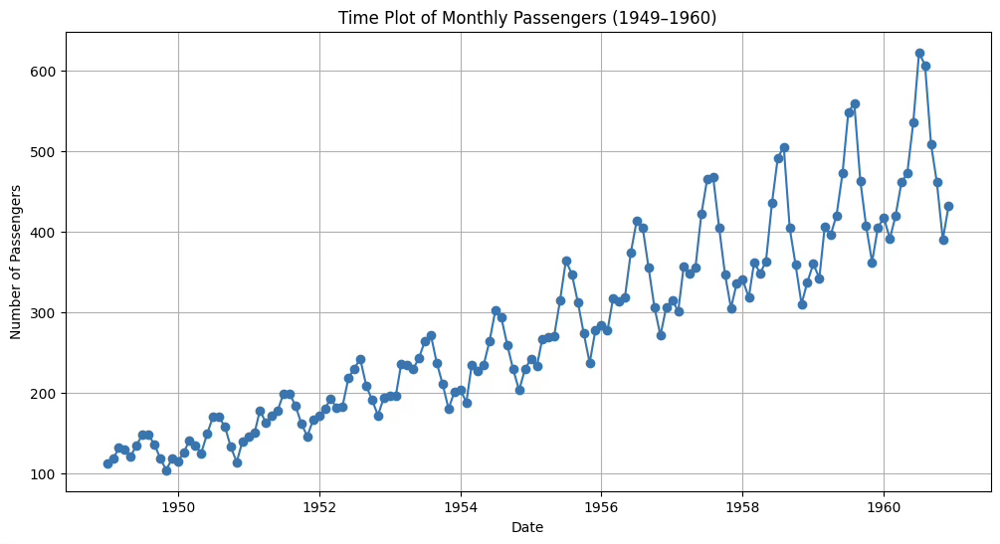
1. 추세 존재
1949년부터 1960년까지 승객 수가 전반적으로 증가하는 뚜렷한 상승 추세를 보이고 있다. 이는 장기적으로 항공 여행 수요가 꾸준히 늘어났음을 의미한다.
2. 계절성 뚜렷
매년 일정한 주기(12개월)를 두고 승객 수가 반복적으로 증감하는 패턴이 나타난다. 여름철과 연말에 승객 수가 높은 피크를 보이고, 겨울·초봄에는 감소하는 경향이 있다.
3. 변동폭 확대(Heteroscedasticity)
시간 경과에 따라 계절 변동폭(peak와 trough의 차이)이 점점 커지고 있다. 이는 비정상 시계열에서 자주 나타나는 특징으로, 분산이 일정하지 않다는 것을 시사합니다.
4. 비정상성 가능성
평균과 분산이 시간에 따라 변동하므로 정상성(stationarity)을 만족하지 않을 가능성이 크다. ARMA 모형 적용 전에 차분(differencing) 또는 변환(log transformation) 등을 통해 정상화를 시도해야 할 필요가 있다.
백색잡음 진단: Ljung-Box and Box-Pierce 통계량
귀무가설 : 분석대상 시계열 데이터는 백색 잡음이다. \(Y_{t} = e_{t}\) <=> 모형인식 불가능
대립가설 : 백색 잡음이 아니다. <=> 패턴이 존재한다. <=> ARMA 모형 인식이 가능하다.
#백색잡음 진단
import statsmodels.api as sm
sm.stats.acorr_ljungbox(df['passengers'],lags=[20],boxpierce=True)| lb_stat | lb_pvalue | bp_stat | bp_pvalue |
| 1434.148907 | 5.300473E-292 | 1328.532248 | 2.291495E-269 |
첫 행은 Ljung-Box 통계량(1456)과 유의확률, 두번째 행은 Box-Pierce 통계량(1381)과 유의확률이다. 두 방법 모두 유의확률이 <0.001이므로 백색잡음이 아니다. boxpierce=True을 제외하면 Ljung-Box 통계량만 출력된다.
해당 시계열 데이터에는 자기상관이 강하게 존재하며, 단순한 무작위 잡음이 아니다. 즉, ARMA 등 자기상관 구조를 반영한 모형을 적용할 필요가 있다.
단위근 unit root 검정
귀무가설 : 단위근을 갖는다. 단위근 unit root 모형 <=> random walk 모형
대립가설 : 단위근 문제가 없다.
단위근 문제가 발생하면 차분으로 문제를 해결한다.
#Augmented Dickey-Fuller 단일근 검정
from statsmodels.tsa.stattools import adfuller
adf_result = adfuller(df['passengers'])
print("ADF Statistic:", adf_result[0])
print("p-value:", adf_result[1])ADF Statistic: 0.8153688792060498
p-value: 0.991880243437641
ADF 검정의 귀무가설(H₀)은 ”시계열이 단위근을 가진 비정상 과정이다”이다. p-value가 0.99로 매우 크기 때문에 귀무가설을 기각할 수 없다. 즉, 이 시계열은 비정상 시계열이며, 추세 제거(차분) 또는 변환 후에 ARMA 모형을 적용해야 한다.
등분산 검정(ARCH test)
귀무가설(H₀): 잔차는 등분산성을 가진다.
대립가설(H₁): 잔차는 이분산성을 가진다.
# 등분산성 검정 (ARCH test)
from statsmodels.stats.diagnostic import het_arch
# flights 데이터에서 'passengers' 컬럼 사용
stat, p_value, _, _ = het_arch(df['passengers'])
print(f"ARCH LM 통계량: {stat}")
print(f"p-value: {p_value}")
if p_value < 0.05:
print("귀무가설 기각: 이 데이터는 이분산성을 가질 가능성이 큼")
else:
print("귀무가설 채택: 이 데이터는 등분산성을 가짐")ARCH LM 통계량: 126.0645062581934
p-value: 2.961233760503082e-22
귀무가설 기각: 이 데이터는 이분산성을 가질 가능성이 큼
p-value가 0.05 미만이므로 귀무가설을 기각한다. 따라서, 이 데이터는 이분산성을 가질 가능성이 매우 높다고 결론낼 수 있다. 즉, flights 데이터의 승객 수 시계열은 분산이 시간에 따라 일정하지 않고, 변동성이 시점에 따라 달라진다고 해석된다.
로그변환, 제곱근 변환, Box-Cox 변환이 있는데 가장 많이 사용되는 로그변환을 사용한다.
전처리후 ADF 검정
from statsmodels.tsa.stattools import adfuller
import numpy as np
# 로그 변환
df['log_passengers'] = np.log(df['passengers'])
# 1차 차분
df['log_diff1'] = df['log_passengers'].diff()
# NaN 제거 후 ADF 테스트
adf_result = adfuller(df['log_diff1'].dropna())
print("ADF Statistic:", adf_result[0])
print("p-value:", adf_result[1])ADF Statistic: -2.717130598388114
p-value: 0.07112054815086184
유의수준 5%에서 단위근 문제없다. (정상성 프로세스)
(2) 모형진단
from statsmodels.tsa.stattools import adfuller
import numpy as np
# 로그 변환
df['log_passengers'] = np.log(df['passengers'])
# 1차 차분
df['log_diff1'] = df['log_passengers'].diff()
# NaN 제거 후 ADF 테스트
adf_result = adfuller(df['log_diff1'].dropna())
print("ADF Statistic:", adf_result[0])
print("p-value:", adf_result[1])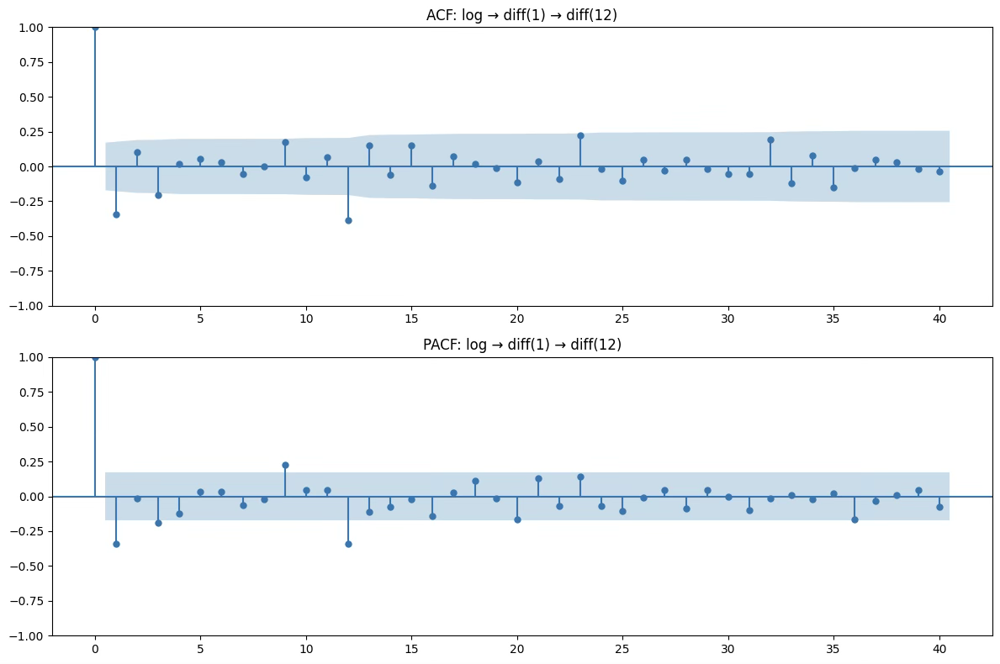
1. ACF
대부분의 시차에서 값이 신뢰구간(파란 음영 영역) 안에 있음.
특정 시차(예: 1, 12)에서만 약간의 유의한 값이 있지만, 전반적으로 빠르게 소멸하는 형태.
이는 잔여 상관 구조가 거의 없음을 의미합니다.
2. PACF
PACF도 비슷하게, 거의 모든 시차에서 값이 유의하지 않음.
시차 1, 12 부근에 약간의 봉이 보이지만 강하지 않음.
AR 계수가 크게 필요하지 않음을 시사.
3. 잠재 모형
비계절 부분
ACF: 시차 1에서만 살짝 유의 → MA(1) 가능성
PACF: 시차 1에서만 살짝 유의 → AR(1) 가능성 → p, q 둘 다 0~1 범위에서 시도
계절 부분 (주기 12)
ACF: 시차 12 부근 약간 유의 → 계절 MA(1) 가능성
PACF: 시차 12 부근 약간 유의 → 계절 AR(1) 가능성 → P, Q 둘 다 0~1 범위에서 시도
모형 비계절 차수 (p,d,q) 계절 차수 (P,D,Q,s) 모델 1 (0,1,1) (0,1,1,12) 모델 2 (1,1,0) (0,1,1,12) 모델 3 (1,1,1) (0,1,1,12) 모델 4 (0,1,1) (1,1,0,12) 모델 5 (0,1,1) (1,1,1,12)
(3) 최적 모형
#모형 비교
candidates = [
((0,1,1),(0,1,1,12)),
((1,1,0),(0,1,1,12)),
((1,1,1),(0,1,1,12)),
((0,1,1),(1,1,0,12)),
((0,1,1),(1,1,1,12)),
]
rows = []
for order, seas in candidates:
m = sm.tsa.statespace.SARIMAX(df["log_passengers"], order=order, seasonal_order=seas,
enforce_stationarity=False, enforce_invertibility=False)
r = m.fit(disp=False)
rows.append({"order": order, "seasonal_order": seas, "AIC": r.aic, "BIC": r.bic})
pd.DataFrame(rows).sort_values("AIC")| 차수 | 계절차수 | AIC | BIC |
| (1, 1, 0) | (0, 1, 1, 12) | -437.52582 | -429.21377 |
| (0, 1, 1) | (1, 1, 0, 12) | -437.11592 | -428.77855 |
| (0, 1, 1) | (0, 1, 1, 12) | -435.44352 | -427.157 |
| (1, 1, 1) | (0, 1, 1, 12) | -433.78518 | -422.73649 |
| (0, 1, 1) | (1, 1, 1, 12) | -428.86966 | -417.82097 |
AIC 최솟값: -437.525820 → 차수=(1,1,0), 계절차수=(0,1,1,12)
BIC 최솟값: -429.213766 → 동일하게 차수=(1,1,0), 계절차수=(0,1,1,12)
모형 추정 및 검정
import numpy as np
import pandas as pd
import seaborn as sns
import statsmodels.api as sm
# 1) 데이터 로드 & 인덱스 설정
df = sns.load_dataset("flights")
df["date"] = pd.to_datetime(df["year"].astype(str) + "-" + df["month"].astype(str))
df = df.set_index("date").sort_index()
# 2) 로그 변환(열로 보관)
df["log_passengers"] = np.log(df["passengers"])
# 3) SARIMA 적합: (p,d,q)×(P,D,Q,12)
model = sm.tsa.statespace.SARIMAX(
df["log_passengers"],
order=(1,1,0),
seasonal_order=(0,1,1,12),
enforce_stationarity=False,
enforce_invertibility=False,
)
res = model.fit()
print(res.summary())
# 1) 잔차 추출
residuals = res.resid
# 2) ACF/PACF 그래프
fig, ax = plt.subplots(2, 1, figsize=(12,6))
sm.graphics.tsa.plot_acf(residuals, lags=30, ax=ax[0])
sm.graphics.tsa.plot_pacf(residuals, lags=30, ax=ax[1])
plt.tight_layout()
plt.show()
# 3) Ljung-Box 검정 (잔차 독립성)
lb_test = acorr_ljungbox(residuals, lags=[12,24], return_df=True)
print("Ljung-Box test:\n", lb_test)
# 4) ARCH 검정 (이분산성 확인)
arch_test = het_arch(residuals)
print("\nARCH Test: LM stat=%.4f, p=%.4f" % (arch_test[0], arch_test[1]))
# 5) 정규성 검정 (Jarque-Bera/Anderson-Darling)
norm_test = normal_ad(residuals)
print("\nNormality test (Anderson-Darling): stat=%.4f, p=%.4f" % (norm_test[0], norm_test[1]))모형 계수 유의성
회귀계수 유의성 매우 높음
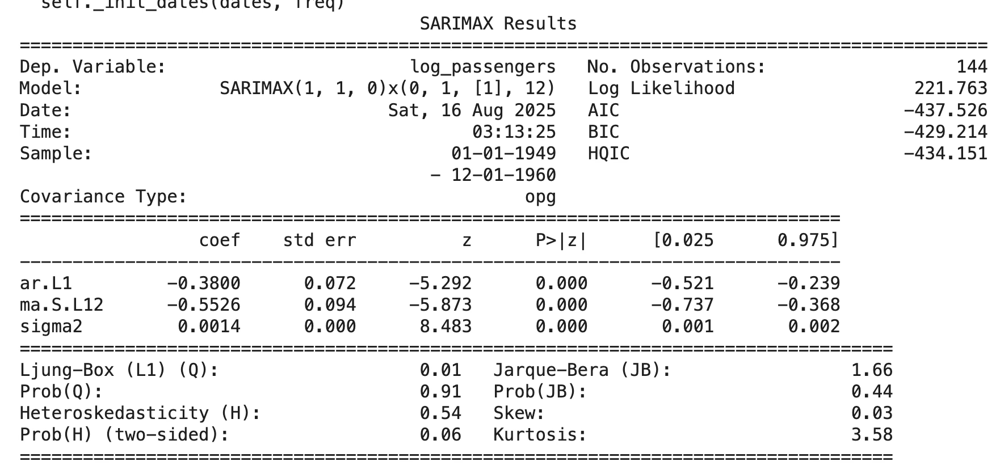
추정식: \(Y_{t} = - 0.380Y_{t - 1} - 0.553\varepsilon_{t - 12} + \varepsilon_{t},\sigma^{2} = 0.0014)\)
\[(1 + 0.380L)(1 - L)(1 - L^{12})X_{t} = (1 - 0.553L^{12})\varepsilon_{t}\]
잔차 진단 결과
1. ACF/PACF
대부분의 시차에서 자기상관이 95% 신뢰구간 내에 있음.
다만 lag=12 근처에서 뚜렷한 음(-) 피크가 나타남 → 계절적 효과가 다 설명되지 않았을 가능성.
2. Ljung-Box test (Q-stat)
12시차: p=0.0001, 24시차: p=0.022 → 잔차가 백색잡음 가정을 위배 (독립성 결여).
즉, 모형이 데이터의 자기상관을 완전히 설명하지 못함.
3. ARCH test
- p=1 → 조건부 이분산성(ARCH 효과) 없음.
4. 정규성 검정 (Anderson-Darling)
p=0.0000 → 잔차가 정규성을 따르지 않음.
분포가 비정규적(꼬리 두꺼움, 왜도 존재)임을 시사.
추정된 SARIMA(1,1,0)×(0,1,1,12) 모형은 데이터의 전반적인 추세와 계절성을 잘 설명하였으나, 잔차에 계절적 자기상관(특히 lag=12)이 남아 있음 → 추가 개선 필요.
잔차는 이분산성 문제는 없지만, 정규성 및 독립성 가정을 위배 → 예측 신뢰구간 해석에 주의 필요.
5. 개선 방향 제안
계절 차수를 더 늘려서 SARIMA(1,1,0)×(0,1,2,12) 또는 SARIMA(1,1,1)×(0,1,1,12) 시도. ➟ 시도 했으나 모형 적합도 낮고 여전히 잔차 진단 결과 문제점 해결되지 않음
혹은 외생 변수(X) 포함한 SARIMAX 또는 구조적 시계열 모형(Trend+Seasonal decomposition) 검토.
import numpy as np
import pandas as pd
import matplotlib.pyplot as plt
import statsmodels.api as sm
# 1) SARIMA 적합: (p,d,q)×(P,D,Q,12)
model = sm.tsa.statespace.SARIMAX(
df["log_passengers"],
order=(1,1,0),
seasonal_order=(0,1,1,12),
enforce_stationarity=False,
enforce_invertibility=False,
)
res = model.fit()
# 2) 12개월 예측 (로그 스케일의 평균과 신뢰구간)
forecast_res = res.get_forecast(steps=12)
forecast_mean = forecast_res.predicted_mean # Series (index가 미래 월)
forecast_ci = forecast_res.conf_int() # DataFrame
# 잘못된 변수명 수정
print("12개월 예측(로그 스케일):")
print(forecast_mean)
# 3) SSE 계산 (원단위 복원 + NaN 정리)
y_true = df["passengers"]
y_pred_in_sample = np.exp(res.fittedvalues) # 원단위
# 관측치와 예측치의 공통 구간만 사용
y_true_aligned = y_true.loc[y_pred_in_sample.index].dropna()
y_pred_aligned = y_pred_in_sample.loc[y_true_aligned.index]
SSE = float(((y_true_aligned - y_pred_aligned) ** 2).sum())
# 4) 그래프 시각화
plt.figure(figsize=(12, 6))
plt.plot(df.index, y_true, label="Observed")
plt.plot(y_pred_aligned.index, y_pred_aligned, label="Fitted")
# 예측(원단위, 로그→exp 복원)
fc_idx = forecast_mean.index
plt.plot(fc_idx, np.exp(forecast_mean), label="Forecast", color="red")
plt.fill_between(
fc_idx,
np.exp(forecast_ci.iloc[:, 0]),
np.exp(forecast_ci.iloc[:, 1]),
color="pink", alpha=0.3
)
plt.legend()
plt.title(f"SARIMA(1,1,0)×(0,1,1,12) Forecast | SSE={SSE:,.2f}")
plt.xlabel("Date"); plt.ylabel("Passengers")
plt.tight_layout(); plt.show()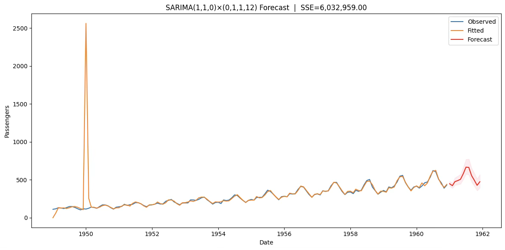
res.fittedvalues는 칼만필터의 diffuse 초기화(불확실한 초기 상태) 때문에 처음 몇 달 값이 비정상적으로 튀기도 합니다. 그래서 1949~1950 초반에 오렌지선이 바늘처럼 치솟죠. 데이터/모형 문제라기보다 시작값 처리 방식 때문입니다.
초기 1차+계절차분 만큼의 웜업 구간을 버리고(보통 13~24개월) 그 이후부터 적합치를 사용
res.fittedvalues 대신 res.get_prediction(start=...)로 안정화된 구간만 가져오기
SSE도 같은 구간에서 계산
import numpy as np
import pandas as pd
import matplotlib.pyplot as plt
import statsmodels.api as sm
# 데이터 로드 & 빈도 지정
df = sns.load_dataset("flights")
df["date"] = pd.to_datetime(df["year"].astype(str) + "-" + df["month"].astype(str))
df = df.set_index("date").sort_index().asfreq("MS")
df["log_passengers"] = np.log(df["passengers"])
# 1) SARIMA 적합
model = sm.tsa.statespace.SARIMAX(
df["log_passengers"],
order=(1,1,0),
seasonal_order=(0,1,1,12),
enforce_stationarity=False,
enforce_invertibility=False,
)
res = model.fit(disp=False)
# 추정 결과 요약 출력
print(res.summary())
# 2) 안정화 이후 fitted values (초기 스파이크 방지)
warmup = 24
pred_in = res.get_prediction(start=df.index[warmup], end=df.index[-1])
mu = pred_in.predicted_mean
var = getattr(pred_in, "var_pred_mean", pred_in.se_mean**2)
fitted_stable = np.exp(mu + 0.5*var)
y_true = df["passengers"].loc[fitted_stable.index]
# SSE 계산
SSE = float(((y_true - fitted_stable) ** 2).sum())
print("\n[모형 적합도]")
print(f"SSE = {SSE:,.2f}")
# 3) 12개월 예측
fc = res.get_forecast(steps=12)
mu_f = fc.predicted_mean
var_f = getattr(fc, "var_pred_mean", fc.se_mean**2)
fc_mean = np.exp(mu_f + 0.5*var_f)
fc_ci = np.exp(fc.conf_int())
print("\n[12개월 예측치]")
print(fc_mean)
# 4) 시각화
plt.figure(figsize=(12,6))
plt.plot(df.index, df["passengers"], label="Observed", color="C0")
plt.plot(fitted_stable.index, fitted_stable, label=f"Fitted (after {warmup}m warmup)", color="C1")
plt.plot(fc_mean.index, fc_mean, label="Forecast (12m)", color="C3")
plt.fill_between(fc_mean.index, fc_ci.iloc[:,0], fc_ci.iloc[:,1], color="C3", alpha=0.25)
plt.title(f"SARIMA(1,1,0)×(0,1,1,12) | SSE={SSE:,.2f}")
plt.xlabel("Date"); plt.ylabel("Passengers"); plt.legend(); plt.tight_layout(); plt.show()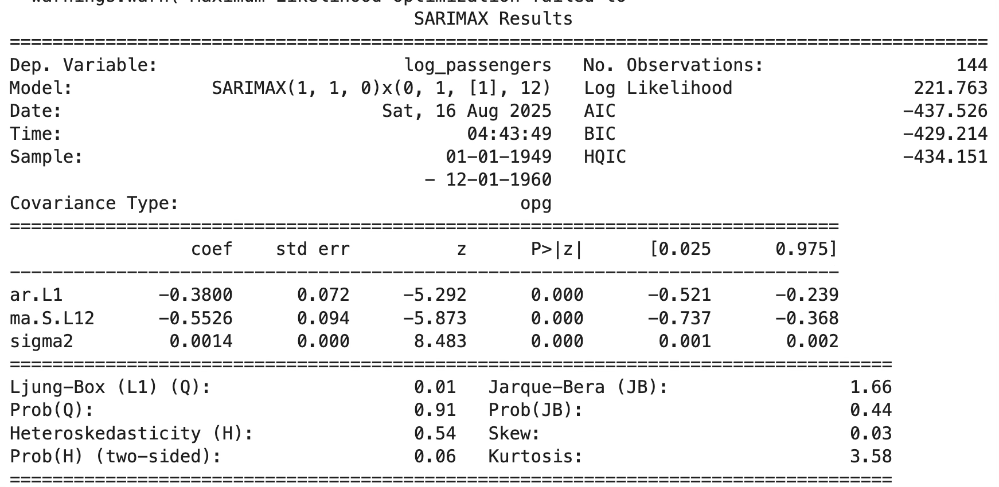
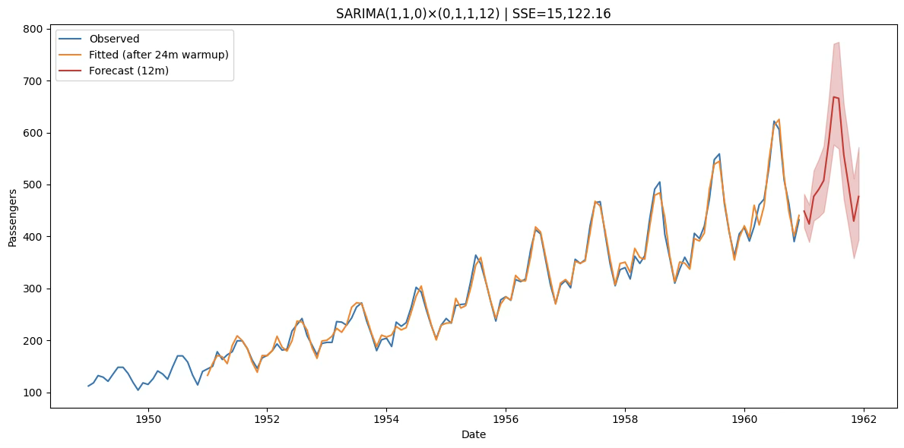